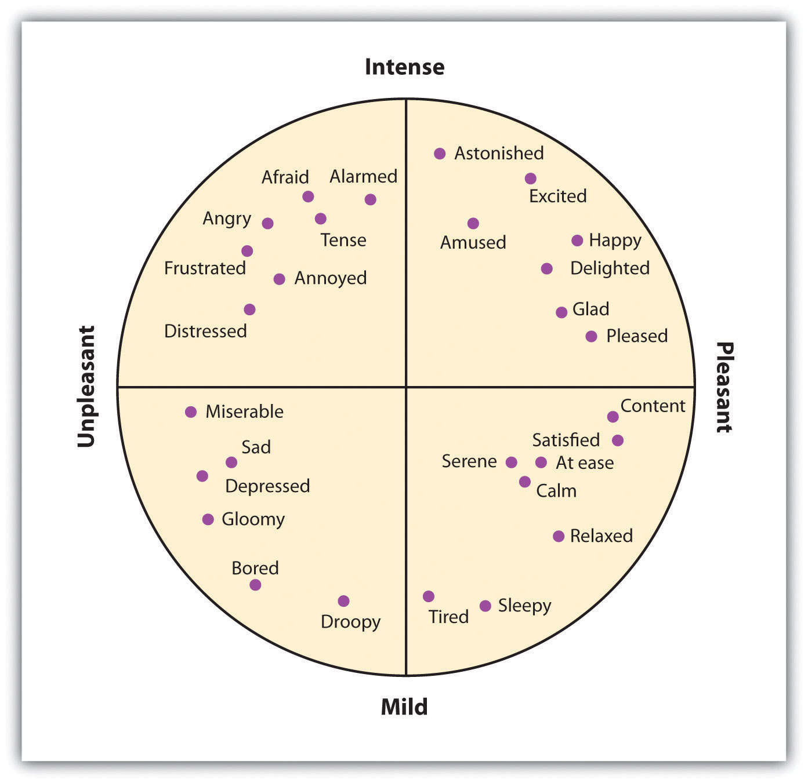
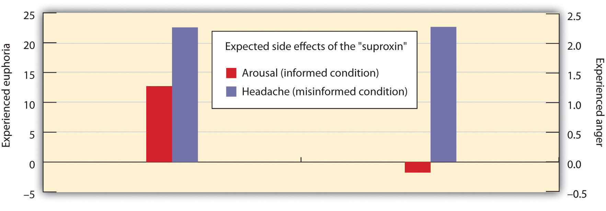

September 16, 2008, as a result of the failure of over a dozen large banks in the United States, was the beginning of a stock market crisis around the world. On October 11, 2008, the head of the International Monetary Fund (IMF) warned that the world financial system was teetering on “the brink of systemic meltdown.”
The Dow Jones Industrial Average fell 21 percent in one week, and BusinessWeek referred to the crisis as a “stock market crash–the “Panic of 2008.”
Over the next year, the crash erased $8.3 trillion in shareholder wealth.
Stock traders, bankers, and everyday investors all responded with panic:
“We aren’t dealing with a fundamental economic issue any longer,” said James Paulsen, chief investment strategist for Wells Capital Management. “We are dealing with fear. And that doesn’t respond to economic medicine.”
“I think right now there are just some very powerful negative images that are alive in many people’s minds—images of the Depression, images of people selling apples,” said George Loewenstein, a behavioral economist at Carnegie Mellon University.
Some investors, like software engineer Sandeep Bhanote, did their best to keep their emotions in check: “Fear is the most dangerous emotion. It can really do the market a lot of harm when maybe it is not necessary to be afraid,”
“When investors act purely on emotion, there is greater chance of them sabotaging their financial goals,” said Stuart Ritter, a certified financial planner at T. Rowe Price.
Although a good part of our social behavior is determined by cognitive, thoughtful, and rational processes, another part—and particularly those behaviors that have substantial impact on our health and happiness—is the result of affect. Our everyday experiences arouse in us a wide range of moods and emotions, both positive and negative, and these feelings have profound consequences for our lives.
Emotions are particularly social, and that is why they are of such interest to social psychologists. Although we may get angry at our computer, frustrated by our stock trading decisions, or be in love with our car, most emotions have a social component (DeSteno & Salovey, 1996; Keltner & Haidt, 1999).DeSteno, D. A., & Salovey, P. (1996). Jealousy and the characteristics of one’s rival: A self-evaluation maintenance perspective. Personality and Social Psychology Bulletin, 22, 920–932; Keltner, D., & Haidt, J. (1999). Social functions of emotions at four levels of analysis. Cognition & Emotion, 13, 505–521. We experience love, anger, guilt, shame, jealousy, and embarrassment for a reason—because these emotions help us develop and maintain positive relationships with others.
We share our emotions with others through our social behavior, including our facial expressions, touch, voice, and posture, and even in our art, poetry, and music (Hertenstein, 2002; Oatley, 2003; Scherer, Johnstone, & Klasmeyer, 2003).Oatley, K. (2003). Emotional expression and experience in the visual and narrative arts. In R. J. Davidson, K. R. Scherer, & H. Goldsmith (Eds.), Handbook of the affective sciences (pp. 481–502). New York, NY: Oxford University Press; Hertenstein, M. J. (2002). Touch: Its communicative functions in infancy. Human Development, 45, 70–94; Scherer, K. R., Johnstone, T., & Klasmeyer, G. (2003). Vocal expression of emotion. In R. J. Davidson, K. R. Scherer, & H. Goldsmith (Eds.), Handbook of the affective sciences (pp. 433–456). New York, NY: Oxford University Press. And emotions influence our social judgments (Howard & Gengler, 2001; Ramanathan & McGill, 2007).Howard, D. J., & Gengler, C. (2001). Emotional contagion effects on product attitudes. Journal of Consumer Research, 28(2), 189–201; Ramanathan, S., & McGill, A. L. (2007). Consuming with others: Social influences on moment-to-moment and retrospective evaluations of an experience. Journal of Consumer Research, 34(4), 506–524. When we are subliminally exposed to a happy facial expression of another person just before we see another stimulus, we perceive that stimulus more positively than we do when angry facial expressions have been primed (Murphy & Zajonc, 1993; Winkielman, Berridge, & Wilbarger, 2005).Murphy, S. T., & Zajonc, R. B. (1993). Affect, cognition, and awareness: Affective priming with optimal and suboptimal stimulus exposures. Journal of Personality and Social Psychology, 64(5), 723–739; Winkielman, P., Berridge, K. C., & Wilbarger, J. L. (2005). Unconscious affective reactions to masked happy versus angry faces influence consumption behavior and judgments of value. Personality and Social Psychology Bulletin, 31(1), 121–135. Viewing sad faces of other people makes music seem more sad (Strahan, Spencer, & Zanna, 2002),Strahan, E. J., Spencer, S. J., & Zanna, M. P. (2002). Subliminal priming and persuasion: Striking while the iron is hot. Journal of Experimental Social Psychology, 38(6), 556–568., and viewing happy faces of others make us like TV shows more (Ravaja & Kallinen, 2004).Ravaja, N., & Kallinen, K. (2004). Emotional effects of startling background music during reading news reports: The moderating influence of dispositional BIS and BAS sensitivities. Scandinavian Journal of Psychology, 45(3), 231–238. When we are with another person who is smiling, we rate products more positively (Tanner, Ferraro, Chartrand, Bettman, & Van Baaren, 2008).Tanner, R. J., Ferraro, R., Chartrand, T. L., Bettman, J. R., & Van Baaren, R. (2008). Of chameleons and consumption: The impact of mimicry on choice and preferences. Journal of Consumer Research, 34(6), 754–766.
The goal of this chapter is to review the wide influence of affect on our social lives. We’ll see how we use moods and emotions to help us understand our social worlds and how they relate to our current happiness and well-beingThe sense of satisfaction with one’s everyday experience. (our sense of satisfaction with our everyday experience). We’ll consider the negative outcomes of powerful negative affective states, including anxiety, depression, and stress, but also the healing power of positive emotions. And we will review some of the most effective ways to cope with negative emotions in order to improve our everyday affect.
Although affect can be harmful if it is unregulated or unchecked, our moods and emotions normally help us function efficiently and in a way that increases our chances of survival (Bless, Bohner, Schwarz, & Strack, 1990; Schwarz et al., 1991).Bless, H., Bohner, G., Schwarz, N., & Strack, F. (1990). Mood and persuasion: A cognitive response analysis. Personality and Social Psychology Bulletin, 16, 331–345; Schwarz, N., Bless, H., Strack, F., Klumpp, G., Rittenauer-Schatka, H., & Simons, A. (1991). Ease of retrieval as information: Another look at the availability heuristic. Journal of Personality and Social Psychology, 61, 195–202. The experience of disgust helps us stay healthy by helping us avoid situations that are likely to carry disease (Oaten, Stevenson, & Case, 2009),Oaten, M., Stevenson, R. J., & Case, T. I. (2009). Disgust as a disease-avoidance mechanism. Psychological Bulletin, 135, 303–321., and the experience of embarrassment helps us respond appropriately to situations in which we may have violated social norms.
Affect signals either that things are going OK (e.g., because we are in a good mood or are experiencing joy or serenity) or that things are not going so well (we are in a bad mood, anxious, upset, or angry). When we are happy, we may seek out and socialize with others; when we are angry, we may attack; and when we are fearful, we are more likely to turn to safety. In short, our emotions help us to determine whether our interactions with others are appropriate, to predict how others are going to respond to us, and to regulate our behavior toward others.
Our emotions are determined in part by responses of the sympathetic nervous system (SNS)The division of the autonomic nervous system that is involved in preparing the body to respond to threats by activating the organs and the glands in the endocrine system.—the division of the autonomic nervous system that is involved in preparing the body to respond to threats by activating the organs and the glands in the endocrine system. The SNS works in opposition to the parasympathetic nervous system (PNS)The division of the autonomic nervous system that is involved in resting, digesting, relaxing, and recovering., the division of the autonomic nervous system that is involved in resting, digesting, relaxing, and recovering. When it is activated, the SNS provides us with energy to respond to our environment. The liver puts extra sugar into the bloodstream, the heart pumps more blood, our pupils dilate to help us see better, respiration increases, and we begin to perspire to cool the body. The sympathetic nervous system also acts to release stress hormones including epinephrine and norepinephrine. At the same time, the action of the PNS is decreased.
We experience the activation of the SNS as arousalThe changes in bodily sensations caused by the activation of the sympathetic nervous system, including increased blood pressure, heart rate, perspiration, and respiration.—changes in bodily sensations, including increased blood pressure, heart rate, perspiration, and respiration. Arousal is the feeling that accompanies strong emotions. I’m sure you can remember a time when you were in love, angry, afraid, or very sad and experienced the arousal that accompanied the emotion. Perhaps you remember feeling flushed, feeling your heart pounding, feeling sick to your stomach, or having trouble breathing.

The arousal that we experience as part of our emotional experience is caused by the activation of the sympathetic nervous system.
The experience of emotion is also controlled in part by one of the evolutionarily oldest parts of our brain—the part known as the limbic system—which includes several brain structures that help us experience emotion. Particularly important is the amygdalaThe region in the limbic system that is primarily responsible for regulating our perceptions of, and reactions to, aggression and fear., the region in the limbic system that is primarily responsible for regulating our perceptions of, and reactions to, aggression and fear. The amygdala has connections to other bodily systems related to emotions, including the facial muscles, which perceive and express emotions, and it also regulates the release of neurotransmitters related to stress and aggression (Best, 2009).Best, B. (2009). The amygdala and the emotions. In Anatomy of the mind (chap. 9). Retrieved from Welcome to the World of Ben Best website: http://www.benbest.com/science/anatmind/anatmd9.html When we experience events that are dangerous, the amygdala stimulates the brain to remember the details of the situation so that we learn to avoid it in the future (Sigurdsson, Doyère, Cain, & LeDoux, 2007; Whalen et al., 2001).Sigurdsson, T., Doyère, V., Cain, C. K., & LeDoux, J. E. (2007). Long-term potentiation in the amygdala: A cellular mechanism of fear learning and memory. Neuropharmacology,52(1), 215–227; Whalen, P. J., Shin, L. M., McInerney, S. C., Fischer, H., Wright, C. I., & Rauch, S. I. (2001). A functional MRI study of human amygdala responses to facial expressions of fear versus anger. Emotion, 1, 70–83.

The limbic system is a part of the brain that includes the amygdala. The amygdala is an important regulator of emotions.
The basic emotionsThe emotions of anger, contempt, disgust, fear, happiness, sadness, and surprise that are based primarily on the arousal produced by the SNS and that do not require much cognitive processing. (anger, contempt, disgust, fear, happiness, sadness, and surprise) are emotions that are based primarily on the arousal produced by the SNS and that do not require much cognitive processing. These emotions happen quickly, without the need for a lot of thought or interpretation. Imagine, for instance, your fearful reaction to the sight of a car unexpectedly pulling out in front of you while you are driving, or your happiness in unexpectedly learning that you won an important prize. You immediately experience arousal, and in the case of negative emotions, the arousal may signal that quick action is needed.
Paul Ekman and his colleagues (Ekman, 1992; 2003)Ekman, P. (1992). Are there basic emotions? Psychological Review, 99(3), 550–553; Ekman, P. (2003). Emotions revealed: Recognizing faces and feelings to improve communication and emotional life. New York, NY: Times Books/Henry Holt and Co. studied the expression and interpretation of the basic emotions in a variety of cultures, including those that had had almost no outside contact (such as Papua New Guinea). In his research, he showed people stimuli that would create a given emotion (such as a dead pig on the ground to create disgust) and videotaped the people as they expressed the emotion they would feel in that circumstance.
Ekman then asked people in other cultures to identify the emotions from the videotapes. He found that the basic emotions were cross-cultural in the sense that they are expressed and experienced consistently across many different cultures. A recent meta-analysis examined the perception of the basic emotions in 162 samples, with pictures and raters from many countries, including New Guinea, Malaysia, Germany, and Ethiopia. The analysis found that in only 3% of these samples was even a single basic emotion recognized at rates below chance (Elfenbein & Ambady, 2002).Elfenbein, H. A., & Ambady, N. (2002). On the universality and cultural specificity of emotion recognition: A meta-analysis. Psychological Bulletin, 128(2), 203–235.
Figure 3.1
The secondary emotions are derived from the basic emotions but are more cognitive in orientation (Russell, 1980).Russell, J. A. (1980) A circumplex model of affect. Journal of Personality and Social Psychology, 39, 1161–1178.
In comparison to the basic emotions, other emotions, such as guilt, shame, and embarrassment, are accompanied by relatively lower levels of arousal and relatively higher levels of cognitive activity. When a close friend of yours wins a prize that you thought you had deserved, you might well feel depressed, angry, resentful, and ashamed. You might mull over the event for weeks or even months, experiencing these negative emotions each time you think about it (Martin & Tesser, 1996).Martin, L. L., & Tesser, A. (Eds.). (1996). Some ruminative thoughts. Hillsdale, NJ: Lawrence Erlbaum Associates. In this case, although there is at least some arousal, your emotions are more highly determined by your persistent, and negative, thoughts. As you can see in Figure 3.1, there are a large number of these secondary emotionsEmotions that provide us with more complex feelings about our social worlds and that are more cognitively based—for example, guilt, shame, and embarrassment.—emotions that provide us with more complex feelings about our social worlds and that are more cognitively based.
Although there are many similarities across cultures in how we experience emotions, there are also some differences (Marsh, Elfenbein, & Ambady, 2003).Marsh, A. A., Elfenbein, H. A., & Ambady, N. (2003). Nonverbal “accents”: Cultural differences in facial expressions of emotion. Psychological Science, 14(4), 373–376. In Japan, there is a tendency to hide emotions in public, which makes them harder for others to perceive (Markus & Kitayama, 1991; Triandis, 1994).Markus, H., & Kitayama, S. (1991). Culture and the self: Implications for cognition, emotion and motivation. Psychological Review, 2, 224–253; Triandis, H. C. (1994). Culture and social behavior. New York, NY: McGraw-Hill Book Company. And as we would expect on the basis of cultural differences between individualism and collectivism, emotions are more focused on other-concern in Eastern cultures, such as Japan and Turkey, but relatively more focused on self-concern in Western cultures (Kitayama, Mesquita, & Karasawa, 2006; Uchida, Kitayama, Mesquita, Reyes, & Morling, 2008).Kitayama, S., Mesquita, B., & Karasawa, M. (2006). Cultural affordances and emotional experience: Socially engaging and disengaging emotions in Japan and the United States. Journal of Personality and Social Psychology, 91, 890–903; Uchida, Y., Kitayama, S., Mesquita, B., Reyes, J. A. S., & Morling, B. (2008). Is perceived emotional support beneficial? Well-being and health in independent and interdependent cultures. Personality and Social Psychology Bulletin, 34, 741–754. Ishii, Reyes, and Kitayama (2003)Ishii, K., Reyes, J. A., & Kitayama, S. (2003). Spontaneous attention to word content versus emotional tone: Differences among three cultures. Psychological Science, 14, 39–46. found that Japanese students paid more attention to the emotional tone of voice of other speakers than did American students, suggesting that the Japanese students were particularly interested in determining the emotions of others. Self-enhancing emotions such as pride and anger are more culturally appropriate emotions to express in Western cultures, whereas other-oriented emotions such as friendliness and shame are seen as more culturally appropriate in Eastern cultures. Similarly, Easterners experience more positive emotions when they are with others, whereas Westerners are more likely to experience positive emotions when they are alone and as a result of their personal accomplishments (Kitayama, Karasawa, & Mesquita, 2004; Masuda & Kitayama, 2004).Kitayama, S., Karasawa, M., & Mesquita, B. (Eds.). (2004). Collective and personal processes in regulating emotions: Emotion and self in Japan and the United States. Mahwah, NJ: Lawrence Erlbaum Associates; Masuda, T., & Kitayama, S. (2004). Perceiver-induced constraint and attitude attribution in Japan and the US: A case for the cultural dependence of the correspondence bias. Journal of Experimental Social Psychology, 40(3), 409–416.
There are also gender differences in emotional experiences. Women report that they are more open to feelings overall (Costa, Terracciano, & McCrae, 2001),Costa, P., Jr., Terracciano, A., & McCrae, R. R. (2001). Gender differences in personality traits across cultures: Robust and surprising findings. Journal of Personality and Social Psychology, 81, 322–331. are more likely to express their emotions in public (Kring & Gordon, 1998),Kring, A. M., & Gordon, A. H. (1998). Sex differences in emotion: Expression, experience, and physiology. Journal of Personality and Social Psychology, 74(3), 686–703. and are more accurate and articulate in reporting the feelings of others (Barrett, Lane, Sechrest, & Schwartz, 2000).Barrett, L. F., Lane, R., Sechrest, L., & Schwartz, G. (2000). Sex differences in emotional awareness. Personality and Social Psychology Bulletin, 26, 1027–1035. These differences show up particularly in terms of emotions that involve social relationships. Kring and Gordon (1998)Kring, A. M., & Gordon, A. H. (1998). Sex differences in emotion: Expression, experience, and physiology. Journal of Personality and Social Psychology, 74(3), 686–703. had male and female students watch film clips that portrayed sadness, happiness, or fear and found that the women reacted more visibly to each film. Coats and Feldman (1996)Coats, E. J., & Feldman, R. S. (1996). Gender differences in nonverbal correlates of social status. Personality and Social Psychology Bulletin, 22, 1014–1022. found that it is easier to read the emotions that women express. Some of these observed gender differences in emotional experiences and expression are biological in orientation, but they are also socialized through experience.
One function of mood is to help us determine how we should evaluate our current situation. Positive moods will likely lead us to maintain our current activities, which seem to be successful, whereas negative moods suggest that we may wish to attempt to change things to improve our situation. And moods have other influences on our cognition and behavior: Positive moods may lead us to think more creatively and to be more flexible in how we respond to opinions that are inconsistent with cultural norms (Ashton-James, Maddux, Galinsky, & Chartrand, 2009).Ashton-James, C. E., Maddux, W. W., Galinsky, A. D., & Chartrand, T. L. (2009). Who I am depends on how I feel: The role of affect in the expression of culture. Psychological Science, 20(3), 340–346. Ito, Chiao, Devine, Lorig, and Cacioppo (2006)Ito, T., Chiao, K., Devine, P. G., Lorig, T., & Cacioppo, J. (2006). The influence of facial feedback on race bias. Psychological Science, 17, 256–61. found that people who were smiling were also less prejudiced.
Mood states are also powerful determinants of our current well-being. To study how people use mood states as information to help them determine their current well-being, Norbert Schwarz and Gerald Clore (1983)Schwarz, N., & Clore, G. L. (1983). Mood, misattribution, and judgments of well-being: Informative and directive functions of affective states. Journal of Personality and Social Psychology, 45, 513–523. called participants on the telephone, pretending that they were researchers from a different city conducting a survey. Furthermore, they varied the day on which they made the calls, such that some of the participants were interviewed on sunny days and some were interviewed on rainy days. During the course of the interview, the participants were asked to report on their current mood states and also on their general well-being. Schwarz and Clore found that the participants reported better moods and greater well-being on sunny days than they did on rainy days.
Schwarz and Clore wondered whether people were using their current mood (“I feel good today”) to determine how they felt about their life overall. To test this idea, they simply asked half of their respondents about the local weather conditions at the beginning of the interview. The idea was to subtly focus these participants on the fact that the weather might be influencing their mood states. And they found that as soon as they did this, although mood states were still influenced by the weather, the weather no longer influenced perceptions of well-being (Figure 3.2 "Mood as Information"). When the participants were aware that their moods might have been influenced by the weather, they realized that the moods were not informative about their overall well-being, and so they no longer used this information. Similar effects have been found for mood that is induced by music or other sources (Keltner, Locke, & Audrain, 1993; Savitsky, Medvec, Charlton, & Gilovich, 1998).Keltner, D., Locke, K. D., & Audrain, P. C. (1993). The influence of attributions on the relevance of negative feelings to personal satisfaction. Personality and Social Psychology Bulletin, 19(1), 21–29; Savitsky, K., Medvec, V. H., Charlton, A. E., & Gilovich, T. (1998). “What, me worry?” Arousal, misattribution and the effect of temporal distance on confidence. Personality and Social Psychology Bulletin, 24(5), 529–536.
Figure 3.2 Mood as Information

The current weather influences people’s judgments of their well being, but only when they are not aware that it might be doing so. After Schwarz and Clore (1983).Schwarz, N., & Clore, G. L. (1983). Mood, misattribution, and judgments of well-being: Informative and directive functions of affective states. Journal of Personality and Social Psychology, 45, 513–523.
Even moods that are created very subtly can have effects on perceptions. Fritz Strack and his colleagues (Strack, Martin, & Stepper, 1988)Strack, F., Martin, L. L., & Stepper, S. (1988). Inhibiting and facilitating conditions of the human smile: A nonobtrusive test of the facial feedback hypothesis. Journal of Personality and Social Psychology, 54, 768–777. had participants rate how funny cartoons were while holding a writing pen in their mouth such that it forced them either to use muscles that are associated with smiling or to use muscles that are associated with frowning (Figure 3.3). They found that participants rated the cartoons as funnier when the pen created muscle contractions that are normally used for smiling rather than frowning. And Stepper and Strack (1993)Stepper, S., & Strack, F. (1993). Proprioceptive determinants of emotional and nonemotional feelings. Journal of Personality and Social Psychology, 64(2), 211–220. found that people interpreted events more positively when they were sitting in an upright position rather than a slumped position. Even finding a coin in a pay phone or being offered some milk and cookies is enough to put people in good moods and to make them rate their surroundings more positively (Clark & Isen, 1982; Isen & Levin, 1972; Isen, Shalker, Clark, & Karp, 1978).Clark, M. S., & Isen, A. M. (1982). Toward understanding the relationship between feeling states and social behavior. In A. H. Hastorf & A. M. Isen (Eds.), Cognitive social psychology (pp. 73–108). New York. NY: Elsevier/North-Holland; Isen, A. M., & Levin, P. F. (1972). Effect of feeling good on helping: Cookies and kindness. Journal of Personality and Social Psychology, 21, 384–388.; Isen, A. M., Shalker, T. E., Clark, M., & Karp, L. (1978). Affect, accessibility of material in memory and behavior: A cognitive loop? Journal of Personality and Social Psychology, 36, 1–12.
Figure 3.3

The position of our mouth muscles can influence our mood states (Strack, Martin, & Stepper, 1988).Strack, F., Martin, L. L., & Stepper, S. (1988). Inhibiting and facilitating conditions of the human smile: A nonobtrusive test of the facial feedback hypothesis. Journal of Personality and Social Psychology, 54, 768–777.
These results show that our body positions, especially our facial expressions, influence our affect. We may smile because we are happy, but we are also happy because we are smiling. And we may stand up straight because we are feeling proud, but we also feel proud because we are standing up straight (Stepper, & Strack, 1993).Stepper, S., & Strack, F. (1993). Proprioceptive determinants of emotional and nonemotional feelings. Journal of Personality and Social Psychology, 64(2), 211–220.
Although arousal is necessary for emotion, it is not sufficient. Arousal becomes emotion only when it is accompanied by a label or by an explanation for the arousal (Schachter & Singer, 1962).Schachter, S., & Singer, J. (1962). Cognitive, social, and physiological determinants of emotional state. Psychological Review, 69(5), 379–399. Thus, although emotions are usually considered to be affective in nature, they really represent an excellent example of the joint influence of affect and cognition. We can say, then, that emotions have two factors—an arousal factor and a cognitive factor (James, 1890; Schachter & Singer, 1962).James, W. (1890). The principles of psychology. New York, NY: Dover; Schachter, S., & Singer, J. (1962). Cognitive, social, and physiological determinants of emotional state. Psychological Review, 69(5), 379–399.
Emotion = arousal + cognitionIn some cases, it may be difficult for people who are experiencing a high level of arousal to accurately determine which emotion they are experiencing. That is, they may be certain that they are feeling arousal, but the meaning of the arousal (the cognitive factor) may be less clear. Some romantic relationships, for instance, are characterized by high levels of arousal, and the partners alternately experience extreme highs and lows in the relationship. One day they are madly in love with each other, and the next they are having a huge fight. In situations that are accompanied by high arousal, people may be unsure what emotion they are experiencing. In the high-arousal relationship, for instance, the partners may be uncertain whether the emotion they are feeling is love, hate, or both at the same time. Misattribution of arousalThe incorrect labeling of the source of the arousal that we are experiencing. occurs when people incorrectly label the source of the arousal that they are experiencing.
Figure 3.4 Misattributing Emotion
The results of an experiment by Schachter and Singer (1962)Schachter, S., & Singer, J. (1962). Cognitive, social, and physiological determinants of emotional state. Psychological Review, 69(5), 379–399. supported the two-factor theory of emotion. The participants who did not have a clear label for their arousal were more likely to take on the emotion of the confederate.
Misattributing Arousal
If you think a bit about your own experiences of different emotions, and if you consider the equation that suggests that emotions are represented by both arousal and cognition, you might start to wonder how much was determined by each. That is, do we know what emotion we are experiencing by monitoring our feelings (arousal) or by monitoring our thoughts (cognition)?
Stanley Schachter and Jerome Singer (1962)Schachter, S., & Singer, J. (1962). Cognitive, social, and physiological determinants of emotional state. Psychological Review, 69(5), 379–399. addressed this question in a well-known social psychological experiment. Schachter and Singer believed that the cognitive part of the emotion was critical—in fact, they believed that the arousal that we are experiencing could be interpreted as any emotion, provided we had the right label for it. Thus they hypothesized that if individuals are experiencing arousal for which they have no immediate explanation, they will “label” this state in terms of the cognitions that are most accessible in the environment. On the other hand, they argued that people who already have a clear label for their arousal would have no need to search for a relevant label and therefore should not experience an emotion.
In the research experiment, the male participants were told that they would be participating in a study on the effects of a new drug, called “suproxin,” on vision. On the basis of this cover story, the men were injected with a shot of epinephrine, a drug that produces physiological arousal. The idea was to give all the participants arousal; epinephrine normally creates feelings of tremors, flushing, and accelerated breathing in people.
Then, according to random assignment to conditions, the men were told that the drug would make them feel certain ways. The men in the epinephrine-informed condition were told the truth about the effects of the drug—they were told that other participants had experienced tremors and that their hands would start to shake, their hearts would start to pound, and their faces might get warm and flushed. The participants in the epinephrine-uninformed condition, however, were told something untrue—that their feet would feel numb, that they would have an itching sensation over parts of their body, and that they might get a slight headache. The idea was to make some of the men think that the arousal they were experiencing was caused by the drug (the informed condition), whereas others would be unsure where the arousal came from (the uninformed condition).
Then the men were left alone with a confederate who they thought had received the same injection. While they were waiting for the experiment (which was supposedly about vision) to begin, the confederate behaved in a wild and crazy (Schachter and Singer called it “euphoric”) manner. He wadded up spitballs, flew paper airplanes, and played with a hula hoop. He kept trying to get the participants to join in his games. Then right before the vision experiment was to begin, the participants were asked to indicate their current emotional states on a number of scales. One of the emotions they were asked about was euphoria.
If you are following the story here, you will realize what was expected—that the men who had a label for their arousal (the informed group) would not be experiencing much emotion—they had a label already available for their arousal. The men in the misinformed group, on the other hand, were expected to be unsure about the source of the arousal—they needed to find an explanation for their arousal, and the confederate provided one. Indeed, as you can see in Figure 3.4 "Misattributing Emotion", this is just what the researchers found.
Then Schachter and Singer did another part of the study, using new participants. Everything was exactly the same except for the behavior of the confederate. Rather than being euphoric, he acted angry. He complained about having to complete the questionnaire he had been asked to do, indicating that they questions were stupid and too personal. He ended up tearing up the questionnaire that he was working on, yelling, “I don’t have to tell them that!” Then he grabbed his books and stormed out of the room.
What do you think happened in this condition? The answer, of course, is, exactly the same thing—the misinformed participants experienced more anger than did the informed participants. The idea is that because cognitions are such strong determinants of emotional states, the same state of physiological arousal could be labeled in many different ways, depending entirely on the label provided by the social situation.
People generally feel positive, both about themselves and about the other people around them. In fact, people in almost all nations, both men and women, and people of all ages report that they are satisfied—at least above the neutral point—on ratings of well-being (Diener, Suh, Lucas, & Smith, 1999; Kahneman, Diener, & Schwarz, 1999).Diener, E., Suh, E. M., Lucas, R. E., & Smith, H. L. (1999). Subjective well-being: Three decades of progress. Psychological Bulletin, 125(2), 276–302; Kahneman, D., Diener, E., & Schwarz, N. (Eds.). (1999). Well-being: The foundations of hedonic psychology. New York, NY: Russell Sage Foundation. Nevertheless, there many social situations that can create negative feelings, and this negative affect can have a variety of negative outcomes on people’s experiences. In this section, we will consider how negative events influence our affective states and how the negative affect we experience can influence our health and happiness. We will also consider how we can use positive affect to cope with the potential negative events that we may experience.
Emotions matter because they influence our behavior. And there is no emotional experience that has a more powerful influence on us than stress. Social psychologists define stressThe physical and psychological reactions that occur whenever we believe that the demands of a situation threaten our ability to respond to the threat. as the physical and psychological reactions that occur whenever we believe that the demands of a situation threaten our ability to respond to the threat (Lazarus, 2000; Lazarus & Folkman, 1984).Lazarus, R. S. (2000) Toward better research on stress and coping. American Psychologist, 55, 665–673; Lazarus, R. S., & Folkman, S. (1984). Stress, appraisal, and coping. New York, NY: Springer Publishing Company. We experience stress when we find ourselves in situations where we are not sure how to respond or whether we are going to be able to adequately cope.
People who have recently experienced negative situations—for example, being the victim of a terrorist attack or a natural disaster, going through a divorce, or experiencing the death of a close loved one—report experiencing stress. Survivors of Hurricane Katrina had a rate of heart attacks that was three times higher than the national average in the years following the disaster, and this was probably due to the stress that the hurricane created (American Medical Association, 2009).American Medical Association. (2009). Three-fold heart attack increase in Hurricane Katrina survivors. Retrieved from http://www.ama-assn.org/ama/pub/news/news/heart-attack-katrina-survivors.shtml And people in New York City who lived nearer to the site of the 9/11 terrorist attacks reported experiencing more stress in the year following it than those who lived farther away (Lampert, Baron, McPherson, & Lee, 2002; Pulcino et al., 2003).Lampert, R., Baron, S. J., McPherson, C. A., & Lee, F. A. (2002). Heart rate variability during the week of September 11, 2001. JAMA, 288, 575; Pulcino, T., Galea, S., Ahern, J., Resnick, H., Foley, M., & Vlahov, D. (2003). Posttraumatic stress in women after the September 11 terrorist attacks in New York City. Journal of Women’s Health, 12(8), 809–820.
Extreme social situations, such as being the victim of a terrorist attack, a natural disaster, or a violent crime, may produce an extreme form of stress known as post-traumatic stress disorder (PTSD)A medical syndrome that includes symptoms of anxiety, sleeplessness, nightmares, and social withdrawal., a medical syndrome that includes symptoms of anxiety, sleeplessness, nightmares, and social withdrawal. The syndrome is frequently experienced by soldiers who return home from wars; those who experience more extreme events during a war also experience more severe PTSD.
Stress is accompanied by increases in arousal. When we experience stress, our heart rate, breathing, and blood pressure increase, and our body begins to secrete adrenaline and other hormones. Perspiration increases to cool down the body. In addition, sugar is released to provide energy, and the pupils dilate to improve our vision. At the same time, the less immediately essential body activities controlled by the parasympathetic nervous system (PNS), including digestion, are reduced in order to divert more energy to allow the body to react to the threat.
The experience of stress likely had positive aspects for human beings in an evolutionary sense. When we are attacked, afraid, or concerned about our welfare, the body signals us that we need to react, and the stress response is one of those signals. But problems begin when a threat continues over time. When it is extreme or prolonged, stress can create substantial negative mental and physical effects. In fact, when stress occurs for too long, it can lead to exhaustion and even death.
The physiologist Hans Seyle (1907–1982) studied stress by examining how rats responded to being exposed to stressors such as extreme cold, infection, shock, and excessive exercise. Seyle found that regardless of the source of the stress, the rats experienced the same series of physiological changes as they suffered the prolonged stress. Seyle created the term general adaptation syndromeThe three distinct phases of physiological change that occur in response to long-term stress: alarm, resistance, and exhaustion. to refer to the three distinct phases of physiological change that occur in response to long-term stress: alarm, resistance, and exhaustion (Figure 3.5 "General Adaptation Syndrome").
Figure 3.5 General Adaptation Syndrome

Hans Seyle’s research on the general adaptation syndrome documented the stages of prolonged exposure to stress.
The experience of stress creates both an increase in general arousal in the sympathetic nervous system (SNS) and another, even more complex, system of physiological changes through the HPA axis (Figure 3.6 "HPA Axis"). The HPA axisA physiological response to stress involving interactions among the hypothalamus, the pituitary gland, and the adrenal glands. is a physiological response to stress involving interactions among the hypothalamus, the pituitary gland, and the adrenal glands. The HPA response begins when the hypothalamus secretes hormones that direct the pituitary gland to release the hormone ACTH. The ACTH then directs the adrenal glands to secrete more hormones, including epinephrine, norepinephrine, and cortisolA stress hormone that releases sugars into the blood to help prepare the body to respond to threat., a stress hormone that releases sugars into the blood to help prepare the body to respond to threat(Rodrigues, LeDoux, & Sapolsky, 2009).Rodrigues, S. M., LeDoux, J. E., & Sapolsky, R. M. (2009). The influence of stress hormones on fear circuitry. Annual Review of Neuroscience, 32, 289–313.
Cortisol is frequently referred to as the “stress hormone,” and it is commonly measured by researchers in order to assess the activation of the HPA axis in response to stress. Cortisol is measured by taking a sample of saliva, which is then analyzed to determine cortisol levels. Cortisol increases when people are stressed, for instance, when they are in dancing competitions (Edelstein, Yim, & Quas, 2010),Edelstein, R. S., Yim, I. S., & Quas, J. A. (2010). Narcissism predicts heightened cortisol reactivity to a psychosocial stressor in men. Journal of Research in Personality, 44(5), 565–572. when they are experiencing public shame (Rohleder, Chen, Wolf, & Miller, 2008),Rohleder, N., Chen, E., Wolf, J. M., & Miller, G. E. (2008). The psychobiology of trait shame in young women: Extending the social self-preservation theory. Health Psychology, 27(5), 523–532. and (I’m sure you won’t be surprised) when taking school exams (Preuss, Schoofs, Schlotz, & Wolf, 2010).Preuss, D., Schoofs, D., Schlotz, W., & Wolf, O. T. (2010). The stressed student: Influence of written examinations and oral presentations on salivary cortisol concentrations in university students. Stress: The International Journal on the Biology of Stress, 13(3), 221–229.
Figure 3.6 HPA Axis

Stress activates the HPA axis. The result is the secretion of epinephrine, norepinephrine, and cortisol.
The experience of prolonged stress has a direct negative influence on our physical health because at the same time that stress increases activity in the SNS, it also suppresses important activity in the PNS. When stress is long-term, the HPA axis remains active and the adrenals continue to produce cortisol. This increased cortisol production exhausts the stress mechanism, leading to fatigue and depression.
The HPA reactions to persistent stress lead to a weakening of the immune system, making us more susceptible to a variety of health problems, including colds and other diseases (Cohen & Herbert, 1996; Faulkner & Smith, 2009; Miller, Chen, & Cole, 2009; Uchino, Smith, Holt-Lunstad, Campo, & Reblin, 2007).Cohen, S., & Herbert, T. B. (1996). Health psychology: Psychological factors and physical disease from the perspective of human psychoneuroimmunology. Annual Review of Psychology, 47, 113–142; Faulkner, S., & Smith, A. (2009). A prospective diary study of the role of psychological stress and negative mood in the recurrence of herpes simplex virus (HSV1). Stress and Health: Journal of the International Society for the Investigation of Stress, 25(2), 179–187; Miller, G., Chen, E., & Cole, S. W. (2009). Health psychology: Developing biologically plausible models linking the social world and physical health. Annual Review of Psychology, 60, 501–524; Uchino, B. N., Smith, T. W., Holt-Lunstad, J., Campo, R., & Reblin, M. (2007). Stress and illness. In J. T. Cacioppo, L. G. Tassinary, & G. G. Berntson (Eds.), Handbook of psychophysiology (3rd ed., pp. 608–632). New York, NY: Cambridge University Press. Stress also damages our DNA, making us less likely to be able to repair wounds and respond to the genetic mutations that cause disease (Epel et al., 2006).Epel, E., Lin, J., Wilhelm, F., Wolkowitz, O., Cawthon, R., Adler, N.,…Blackburn, E. H. (2006). Cell aging in relation to stress arousal and cardiovascular disease risk factors. Psychoneuroendocrinology, 31(3), 277–287. As a result, wounds heal more slowly when we are under stress, and we are more likely to get cancer (Kiecolt-Glaser, McGuire, Robles, & Glaser, 2002; Wells, 2006).Kiecolt-Glaser, J. K., McGuire, L., Robles, T. F., & Glaser, R. (2002). Psychoneuroimmunology: Psychological influences on immune function and health. Journal of Consulting and Clinical Psychology, 70(3), 537–547; Wells, W. (2006). How chronic stress exacerbates cancer. Journal of Cell Biology, 174(4), 476.
Sheldon Cohen and colleagues (Cohen et al., 1998)Cohen, S., Frank, E., Doyle, W. J., Skoner, D. P., Rabin, B. S., & Gwaltney, J. M. Jr. (1998). Types of stressors that increase susceptibility to the common cold in adults. Health Psychology, 17, 214–23. demonstrated experimentally that repeated exposure to threats and stress can increase susceptibility to the common cold virus, revealing the causal link between psychological stress and actual susceptibility to disease. To begin, the researchers had adult volunteers fill out several questionnaires about the stressful experiences in their lives. Then the researchers administered nose drops into each participant’s nose. The control group (the lucky ones!) received a placebo saline solution; the experimental group received a solution containing a cold virus. Over the next week, the participants were examined daily by a nurse. None of the control group participants got a cold. But of those exposed to the cold virus, 82% did get a cold. Furthermore, within this condition, those participants who reported enduring long-term stressors—particularly those who felt that they were underemployed or who had enduring interpersonal difficulties with family or friends—were significantly more likely to catch colds than those who had only short-term stress.
Chronic stress is also a major contributor to heart disease. Although heart disease is caused in part by genetic factors, as well as by high blood pressure, high cholesterol, and cigarette smoking, it is also caused by stress (Krantz & McCeney, 2002).Krantz, D. S., & McCeney, M. K. (2002). Effects of psychological and social factors on organic disease: A critical assessment of research on coronary heart disease. Annual Review of Psychology, 53, 341–369. Long-term stress creates two opposite effects on the coronary system. Stress increases cardiac output (i.e., the heart pumps more blood) at the same time that it reduces the ability of the blood vessels to conduct blood through the arteries, as the increase in levels of cortisol leads to a buildup of plaque on artery walls (Dekker et al., 2008).Dekker, M., Koper, J., van Aken, M., Pols, H., Hofman, A., de Jong, F.,…Tiemeier, H. (2008). Salivary cortisol is related to atherosclerosis of carotid arteries. Journal of Clinical Endocrinology and Metabolism, 93(10), 3741. The combination of increased blood flow and arterial constriction leads to increased blood pressure (hypertension), which can damage the heart muscle, leading to heart attack and death.
The stressors for Seyle’s rats included electric shock and exposure to cold. Although these are probably not on your top-10 list of most common stressors, the stress that we experience in our everyday social interactions can also be taxing. Thomas Holmes and Richard Rahe (1967)Holmes, T. H., & Rahe, R. H. (1967). The social readjustment rating scale. Journal of Psychosomatic Research, 11, 213–218. developed a measure of some everyday life events that might lead to stress, and you can assess your own likely stress level by completing the measure in Table 3.1 "The Holmes and Rahe Stress Scale" and calculating your stress level by looking at Table 3.2 "Interpretation of the Holmes and Rahe Stress Scale". You might want to pay particular attention to this score because it can predict the likelihood that you will get sick. Rahe and his colleagues (Rahe, Mahan, Arthur, & Gunderson, 1970)Rahe, R. H., Mahan, J., Arthur, R. J., & Gunderson, E. K. E. (1970). The epidemiology of illness in naval environments: I. Illness types, distribution, severities and relationships to life change. Military Medicine, 135, 443–452. asked 2,500 members of the military to complete the rating scale and then assessed the health records of the soldiers over the following 6 months. The results were clear: The higher the scale score, the more likely the soldier was to end up in the hospital.
Table 3.1 The Holmes and Rahe Stress Scale
| Life Event | Score |
|---|---|
| Death of spouse | 100 |
| Divorce | 73 |
| Marital separation from mate | 65 |
| Detention in jail, other institution | 63 |
| Death of a close family member | 63 |
| Major personal injury or illness | 53 |
| Marriage | 50 |
| Retirement | 45 |
| Major change in the health or behavior of a family member | 44 |
| Pregnancy | 40 |
| Sexual difficulties | 39 |
| Gaining a new family member (e.g., through birth, adoption, oldster moving) | 39 |
| Major business readjustment (e.g., merger reorganization, bankruptcy) | 39 |
| Major change in financial status | 38 |
| Death of close friend | 37 |
| Change to different line of work | 36 |
| Major change in the number of arguments with spouse | 35 |
| Taking out a mortgage or loan for a major purchase | 31 |
| Foreclosure on a mortgage or loan | 30 |
| Major change in responsibilities at work | 29 |
| Son or daughter leaving home (e.g., marriage, attending college) | 29 |
| Trouble with in-laws | 29 |
| Outstanding personal achievement | 28 |
| Spouse beginning or ceasing to work outside the home | 26 |
| Beginning or ceasing formal schooling | 26 |
| Major change in living conditions | 25 |
| Revision of personal habits (dress, manners, associations, etc.) | 24 |
| Trouble with boss | 23 |
| Major change in working hours or conditions | 20 |
| Change in residence | 20 |
| Change to a new school | 20 |
| Major change in usual type and/or amount of recreation | 19 |
| Major change in church activities (a lot more or less than usual) | 19 |
| Major change in social activities (clubs, dancing, movies, visiting) | 18 |
| Taking out a mortgage or loan for a lesser purchase (e.g., for a car, television, freezer) | 17 |
| Major change in sleeping habits | 16 |
| Major change in the number of family get-togethers | 15 |
| Major change in eating habits | 15 |
| Vacation | 13 |
| Christmas season | 12 |
| Minor violations of the law (e.g., traffic tickets) | 11 |
| Total | ______ |
| Note. You can calculate your score on this scale by adding the total points across each of the events that you have experienced over the past year. Then use Table 3.2 "Interpretation of the Holmes and Rahe Stress Scale" to determine your likelihood of getting ill. | |
Table 3.2 Interpretation of the Holmes and Rahe Stress Scale
| Number of Life-Changing Units | Chance of Developing a Stress-Related Illness (%) |
|---|---|
| Less than 150 | 30 |
| 150–300 | 50 |
| More than 300 | 80 |
Although some of the items on the Holmes and Rahe scale are major, you can see that even minor stressors add to the total score. Our everyday interactions with the environment that are essentially negative, known as daily hasslesOur everyday interactions with the environment that are essentially negative., can also create stress, as well as poorer health outcomes (Hutchinson & Williams, 2007).Hutchinson, J. G., & Williams, P. G. (2007). Neuroticism, daily hassles, and depressive symptoms: An examination of moderating and mediating effects. Personality and Individual Differences, 42(7), 1367–1378. Events that may seem rather trivial altogether, such as having an argument with a friend or getting cut off by another car in rush-hour traffic, can produce stress (Fiksenbaum, Greenglass, & Eaton, 2006).Fiksenbaum, L. M., Greenglass, E. R., & Eaton, J. (2006). Perceived social support, hassles, and coping among the elderly. Journal of Applied Gerontology, 25(1), 17–30. Glaser (1985)Glaser, R. (1985). Stress-related impairments in cellular immunity. Psychiatry Research, 16(3), 233–239. found that medical students who were tested during, rather than several weeks before, their school examination periods showed lower immune system functioning. Other research has found that even more minor stressors, such as having to do math problems during an experimental session, can compromise the immune system (Cacioppo et al., 1998).Cacioppo, J. T., Berntson, G. G., Malarkey, W. B., Kiecolt-Glaser, J. K., Sheridan, J. F., Poehlmann, K. M.,…Glaser, R. (1998). Autonomic, neuroendocrine, and immune responses to psychological stress: The reactivity hypothesis. In Annals of the New York Academy of Sciences: Neuroimmunomodulation: Molecular aspects, integrative systems, and clinical advances (Vol. 840, pp. 664–673). New York, NY: New York Academy of Sciences.
Not all people experience and respond to stress in the same way, and these differences can be important. The cardiologists Meyer Friedman and R. H. Rosenman (1974)Friedman, M., & Rosenman, R. H. (1974). Type A behavior and your heart. New York, NY: Knopf. were among the first to study the link between stress and heart disease. In their research, they noticed that even though the partners in married couples often had similar lifestyles, diet, and exercise patterns, the husbands nevertheless generally had more heart disease than did the wives. As they tried to explain the difference, they focused on the personality characteristics of the partners, finding that the husbands were more likely than the wives to respond to stressors with negative emotions and hostility.
Recent research has shown that the strongest predictor of a physiological stress response from daily hassles is the amount of negative emotion that they evoke. People who experience strong negative emotions as a result of everyday hassles and who respond to stress with hostility experience more negative health outcomes than do those who react in a less negative way (McIntyre, Korn, & Matsuo, 2008; Suls & Bunde, 2005).McIntyre, K., Korn, J., & Matsuo, H. (2008). Sweating the small stuff: How different types of hassles result in the experience of stress. Stress & Health: Journal of the International Society for the Investigation of Stress, 24(5), 383–392. doi:10.1002/smi.1190; Suls, J., & Bunde, J. (2005). Anger, anxiety, and depression as risk factors for cardiovascular disease: The problems and implications of overlapping affective dispositions. Psychological Bulletin, 131(2), 260–300. Williams and his colleagues (2001)Williams, R. B. (2001). Hostility: Effects on health and the potential for successful behavioral approaches to prevention and treatment. In A. Baum, T. A. Revenson, & J. E. Singer (Eds.), Handbook of health psychology. Mahwah, NJ: Lawrence Erlbaum Associates.found that people who scored high on measures of anger were three times more likely to suffer from heart attacks in comparison with those who scored lower on anger.
On average, men are more likely than are women to respond to stress by activating the fight-or-flight responseAn emotional and behavioral reaction to stress that increases the readiness for action., which is an emotional and behavioral reaction to stress that increases the readiness for action. The arousal that men experience when they are stressed leads them to either go on the attack, in an aggressive or revenging way, or else retreat as quickly as they can to safety from the stressor. The fight-or-flight response allows men to control the source of the stress if they think they can do so, or if that is not possible, it allows them to save face by leaving the situation. The fight-or-flight response is triggered in men by the activation of the HPA axis.
Women, on the other hand, are less likely to take a fight-or-flight response to stress. Rather, they are more likely to take a tend-and-befriend response (Taylor et al., 2000).Taylor, S. E., Klein, L. C., Lewis, B. P., Gruenewald, T. L., Gurung, R. A. R., & Updegraff, J. A. (2000). Biobehavioral responses to stress in females: Tend-and-befriend, not fight-or-flight. Psychological Review, 107(3), 411–429. The tend-and-befriend responseA behavioral reaction to stress that involves activities designed to create social networks that provide protection from threats. is a behavioral reaction to stress that involves activities designed to create social networks that provide protection from threats. This approach is also self-protective because it allows the individual to talk to others about her concerns as well as to exchange resources, such as child care. The tend-and-befriend response is triggered in women by the release of the hormone oxytocin, which promotes affiliation. Overall, the tend-and-befriend response is healthier than the flight-or-flight response because it does not produce the elevated levels of arousal related to the HPA, including the negative results that accompany increased levels of cortisol. This may help explain why women, on average, have less heart disease and live longer than men.
The experience of long-term stress—and its potential negative impact on our physical and mental health—represents one example of the powerful influence of the social situation in our everyday lives. These findings represent social psychological principles in action: Our affect, cognition, and behavior are influenced in profound ways by the events that occur to us, and particularly by the people around us. Furthermore, the observed gender differences in response to stress demonstrate another example of the operation of the basic principles of social psychology: Men usually respond to stress by focusing on self-concern (fight or flight) whereas women are more likely to respond by focusing on other-concern (tend-and-befriend).
Unfortunately, stress is not the only negative health consequence that can be caused by our social interactions. DepressionAn affective disorder in which people experience sadness, low self-esteem, negative thoughts, pessimism, and apathy. is an affective disorder in which people experience sadness, low self-esteem, negative thoughts, pessimism, and apathy. Physical symptoms, such as loss of appetite and insomnia, may also accompany depression. Almost 3% of the U.S. population—that is, over 7 million people—experience a major depressive event every year, and the incidence is somewhat greater for women than for men (Kessler, McGonagle, Nelson, & Hughes, 1994).Kessler, R. C., McGonagle, K. A., Nelson, C. B., & Hughes, M. (1994). Sex and depression in the National Comorbidity Survey: II. Cohort effects. Journal of Affective Disorders, 30(1), 15–26. And many, many more people suffer from milder, but also harmful, forms of depression. Minor depression—the everyday negative mood or “blues” that most of us experience—is a part of everyday life for many people. It is no surprise that depression has been termed “the common cold of mental illness.”
Still another mental health outcome that relates to social behavior is anxietyA psychological disorder that may be accompanied by a number of physical symptoms, including diarrhea, upset stomach, sweaty hands, shortness of breath, poor concentration, and general agitation.—a psychological disorder that may be accompanied by a number of physical symptoms, including diarrhea, upset stomach, sweaty hands, shortness of breath, poor concentration, and general agitation. As with depression, anxiety may be severe in some cases for some people, but it can also occur in more subtle, minor, and yet nevertheless troubling forms for many people.
Anxiety and depression have many causes. These syndromes are partially genetically inherited and are also determined in part by body chemicals including hormones and neurotransmitters. Nevertheless, depression and anxiety are also largely socially determined, and social psychologists naturally focus on these aspects. To a social psychologist, depression and anxiety are maladies that are caused by our everyday social lives and that can be understood and treated—at least in part—in a social sense.
Depression and anxiety are caused at least partly by the lack of adequate social interactions. Almost half of Americans describe themselves as being shy. Shy people frequently find it difficult to make friends because they evaluate themselves negatively and feel that they cannot succeed in social encounters (Cheek & Melchior, 1990).Cheek, J. M., & Melchior, L. A. (1990). Shyness, self-esteem, and self-consciousness. In Handbook of social and evaluation anxiety (pp. 47–82). New York, NY: Plenum Press. Extremely shy people may become lonely, and loneliness is a risk factor for a large range of physical and mental health problems, including depression and anxiety (Cacioppo, Hawley, & Berston, 2003; Christensen & Kashy, 1998).Cacioppo, J. T., Hawley, L. C., & Bernston, G. G. (2003). The anatomy of loneliness. Current Directions in Psychological Science, 12(3), 71–74; Christensen, P. N., & Kashy, D. A. (1998). Perceptions of and by lonely people in initial social interaction. Personality and Social Psychology Bulletin, 24(3), 322–329. Depressed people frequently tend to avoid social interactions altogether, whereas shy, anxious people tend to become uncomfortable in public and may overestimate how much people are focusing on them. On the other hand, people who are more extroverted (i.e., who enjoy making friends and being in social situations) are less depressed and have fewer health problems (Diener, Suh, Lucas, & Smith, 1999).Diener, E., Suh, E. M., Lucas, R. E., & Smith, H. L. (1999). Subjective well-being: Three decades of progress. Psychological Bulletin, 125(2), 276–302.
Depression and anxiety are determined both by how we feel about our own performance and by our social interactions with others. We are more likely to feel good about ourselves when we perceive that we have adequate social interactions and that we are accepted and cared for by others—but we are more likely to feel poorly about ourselves when we perceive that we are not measuring up to the goals and standards that others find important. When we feel that there are discrepancies between our goals and the actual conditions in our lives, we feel more emotion (Carver & Scheier, 1981).Carver, C. S., & Scheier, M. F. (1981). Attention and self-regulation: A control-theory approach to human behavior. New York, NY: Springer-Verlag.
Tory Higgins and his colleagues (Higgins, Bond, Klein, & Strauman, 1986; Strauman & Higgins, 1988)Higgins, E. T., Bond, R. N., Klein, R., & Strauman, T. (1986). Self-discrepancies and emotional vulnerability: How magnitude, accessibility, and type of discrepancy influence affect. Journal of Personality and Social Psychology, 51(1), 5–15; Strauman, T. J., & Higgins, E. T. (1988). Self-discrepancies as predictors of vulnerability to distinct syndromes of chronic emotional distress. Journal of Personality, 56(4), 685–707. have proposed that the types of emotional distress we experience are determined by both our perceptions of how well our own behaviors meet the standards and goals we have provided ourselves (our internal standards) and our perceptions of how others think about us (our external standards). Higgins found in his research that people were more likely to experience sadness, dissatisfaction, and other depression-related emotions when they indicated that their current perception of themselves (the actual self-concept) was discrepant with their hopes and goals (the ideal self-concept). But people were more likely to experience fear, worry, tension, and other anxiety-related emotions when they felt that the actual self-concept was discrepant with their beliefs about important standards regarding duty and obligations (the ought self-concept).
Higgins also found in his research that the same negative emotions resulted when there were discrepancies between the actual self-concept and the ideal self-concept or the ought self-concept provided by other important people, such as parents and friends. That is, the participants felt bad about themselves when they did not meet the goals that other people thought were important (the external standards), just as they felt bad about not meeting their own goals (the internal standards). You might not care that much yourself about achieving in school or meeting your family obligations, but your failure to meet these goals may still produce negative emotions because you realize that your parents do think it is important. Again, the importance of the social situation in creating emotional experience is clear.
As you can see in Figure 3.7 "The Self-Fulfilling Nature of Anxiety and Depression", still another social aspect of anxiety and depression is that they are contagious and self-fulfilling. When we are depressed or anxious, these feelings show up in our behavior. Other people then see our negative states, and they are likely to respond to us negatively. These responses make it more difficult for us to do well in school and at work and lead to negative outcomes. For instance, people who are depressed or anxious are more likely to be divorced and fired from their jobs and are less fun to be around (Coyne & Downey, 1991).Coyne, J. C., & Downey, G. (1991). Social factors and psychopathology: Stress, social support, and coping processes. Annual Review of Psychology, 42, 401–425. And these negative outcomes naturally create even more negative cognitions and more negative affect, which in turn make us feel even worse about ourselves.
Figure 3.7 The Self-Fulfilling Nature of Anxiety and Depression
Given the social determinants of depression and anxiety, it will probably not surprise you to hear that one of the more important approaches to reducing anxiety and depression is to attempt to change our social cognitions and to help us improve our social interactions with others. Many current psychological therapies used to help alleviate depression and anxiety are designed to change the thought processes and the social interactions of individuals with psychological difficulties (Ellis, 2004; Beck, Freeman, & Davis, 2004).Ellis, A. (2004). Why rational emotive behavior therapy is the most comprehensive and effective form of behavior therapy. Journal of Rational-Emotive and Cognitive-Behavior Therapy, 22, 85–92; Beck, A. T., Freeman, A., & Davis, D. D. (2004). Cognitive therapy of personality disorders (2nd ed.). New York, NY: Guilford Press.
No matter how healthy and happy we are in our everyday lives, there are going to be times when we experience stress, depression, and anxiety. Some of these experiences will be major and some will be minor, and some of us will experience these emotions more than others. Sometimes these feelings will be the result of clear difficulties that pose direct threats to us: We or those we care about may be ill or injured; we may lose our job or have academic difficulties. At other times, these feelings may seem to develop for no apparent reason.
Although it is not possible to prevent the experience of negative emotions entirely (in fact, given their importance in helping us understand and respond to threats, we would not really want to if we could), we can nevertheless learn to respond to and cope with them in the most productive possible ways. We do not need to throw up our hands in despair when things go wrong—rather, we can bring our personal and social resources to bear to help us. We have at our disposal many techniques that we can use to help us deal with negative emotions.
Perhaps the most common approach to dealing with negative affect is to attempt to suppress, avoid, or deny it. You probably know people who seem to you to be stressed, depressed, or anxious but who cannot or will not see it in themselves. Perhaps you tried to talk to them about it, to get them to open up to you, but were rebuffed. They seem to act as if there is no problem at all, simply moving on with life without admitting or even trying to deal with the negative feelings. Or perhaps you have taken a similar approach yourself: Have you ever had an important test to study for or an important job interview coming up, and rather than planning and preparing for it, you simply tried put it out of your mind entirely?
Research has found that there are clear difficulties with an approach to negative events and feelings that involves simply trying to ignore them. For one, ignoring our problems does not make them go away. Not being able to get our work done because we are depressed, being too anxious to develop good relationships with others, or experiencing so much stress that we get sick will be detrimental to our life even if we cannot admit that it is occurring.
Suppressing our emotions is also not a very good option, at least in the long run, because it tends to fail (Gross & Levenson, 1997).Gross, J. J., & Levenson, R. W. (1997). Hiding feelings: The acute effects of inhibiting negative and positive emotion. Journal of Abnormal Psychology, 106(1), 95–103. If we know that we have a big exam coming up, we have to focus on the exam itself in order to suppress it. We can’t really suppress or deny our thoughts because we actually have to recall and face the event in order to make the attempt to not think about it. Furthermore, we may continually worry that our attempts to suppress will fail. Suppressing our emotions might work out for a short while, but when we run out of energy, the negative emotions may shoot back up into consciousness, causing us to reexperience the negative feelings that we had been trying to avoid.
Daniel Wegner and his colleagues (Wegner, Schneider, Carter, & White, 1987)Wegner, D. M., Schneider, D. J., Carter, S. R., & White, T. L. (1987). Paradoxical effects of thought suppression. Journal of Personality and Social Psychology, 53(1), 5–13. directly tested whether people would be able to effectively suppress a simple thought. They asked participants in a study to not think about a white bear for 5 minutes but to ring a bell in case they did. (Try it yourself—can you do it?) The participants were unable to suppress the thought as instructed—the white bear kept popping into mind, even when they were instructed to avoid thinking about it. You might have had a similar experience when you were dieting or staying home to study—the chocolate bar in the kitchen cabinet or the fun time you were missing by staying home kept popping into mind, disrupting your work.
Another poor approach to attempting to escape from our problems is to engage in behaviors designed to distract us from them. Sometimes this approach will be successful in the short term—we might try distracting ourselves from our troubles by going for a run, watching TV, or reading a book, and perhaps this might be useful. But sometimes people go to extremes to avoid self-awareness when it might be better that they face their troubles directly. If we experience discrepancies between our ideal selves and our important self-concepts, if we feel that we cannot ever live up to our or others’ expectations for us, or if we are just really depressed or anxious, we may attempt to escape ourselves entirely. Roy Baumeister (1991)Baumeister, R. F. (1991). The self against itself: Escape or defeat? In Relational self: Theoretical convergences in psychoanalysis and social psychology (pp. 238–256). New York, NY: Guilford Press. has speculated that maladaptive behaviors such as drug abuse, sexual masochism, spiritual ecstasy, binge eating, and even suicide are all mechanisms by which people may attempt to escape the self.
Not only does research show that attempting to suppress our negative thoughts does not work, there is even evidence that the opposite is true—that when we are faced with troubles, it is healthy to let the negative thoughts and feelings out by expressing them, either to ourselves or to others. James Pennebaker and his colleagues (Pennebaker, Colder, & Sharp, 1990; Watson & Pennebaker, 1989)Pennebaker, J. W., Colder, M., & Sharp, L. K. (1990). Accelerating the coping process. Journal of Personality and Social Psychology, 58(3), 528–537; Watson, D., & Pennebaker, J. W. (1989). Health complaints, stress, and distress: Exploring the central role of negative affectivity. Psychological Review, 96(2), 234–254. have conducted many correlational and experimental studies that demonstrate the advantages to our mental and physical health of opening up versus bottling our feelings. This research team has found that simply talking about or writing about our emotions or our reactions to negative events provides substantial health benefits.
Pennebaker and Beall (1986)Pennebaker, J. W., & Beall, S. K. (1986). Confronting a traumatic event: Toward an understanding of inhibition and disease. Journal of Abnormal Psychology, 95(3), 274–281. randomly assigned students to write about either the most traumatic and stressful event of their lives or to write about a trivial topic. Although the students who wrote about the traumas had higher blood pressure and more negative moods immediately after they wrote their essays, they were also less likely to visit the student health center for illnesses during the following 6 months in comparison to those who wrote about more minor issues. Something positive evidently occurred as a result of confronting their negative experiences. Other research studied individuals whose spouses had died in the previous year, finding that the more they talked about the death with others, the less likely they were to become ill during the subsequent year. Daily writing about one’s emotional states has also been found to increase immune system functioning (Petrie, Fontanilla, Thomas, Booth, & Pennebaker, 2004),Petrie, K. J., Fontanilla, I., Thomas, M. G., Booth, R. J., & Pennebaker, J. W. (2004). Effect of written emotional expression on immune function in patients with human immunodeficiency virus infection: A randomized trial. Psychosomatic Medicine, 66(2), 272–275. and Uysal and Lu (2011)Uysal, A., & Lu, Q. (2011, July 4). Is self-concealment associated with acute and chronic pain? Health Psychology. doi:10.1037/a0024287 found that self-expression was associated with experiencing less physical pain.
Opening up probably helps in various ways. For one, expressing our problems allows us to gain information from others and may also bring support from them. And writing or thinking about one’s experiences also seems to help people make sense of the events and may give them a feeling of control over their lives (Pennebaker & Stone, 2004).Pennebaker, J. W., & Stone, L. D. (Eds.). (2004). Translating traumatic experiences into language: Implications for child abuse and long-term health. Washington, DC: American Psychological Association.
As we have seen, emotions are useful in warning us about potential danger and in helping us to make judgments quickly, so it is a good thing that we have them. However, we also need to learn how to control our emotions, to prevent our emotions from letting our behavior get out of control. The process of setting goals and using our cognitive and affective capacities to reach those goals is known as self-regulationThe process of setting goals and using our cognitive and affective capacities to reach those goals., and a good part of self-regulation involves regulating our emotions.
To be the best people that we possibly can, we have to work hard at it. Succeeding at school, at work, and at our relationships with others takes a lot of effort. When we are successful at self-regulation, we are able to move toward or meet the goals that we set for ourselves. When we fail at self-regulation, we are not able to meet those goals. People who are better able to regulate their behaviors and emotions are more successful in their personal and social encounters (Eisenberg & Fabes, 1992),Eisenberg, N., & Fabes, R. A. (1992). Emotion, regulation, and the development of social competence. In Emotion and social behavior (pp. 119–150). Thousand Oaks, CA: Sage Publications. and thus self-regulation is a skill we should seek to master.
Being able to exert self-control has some important positive outcomes. Consider, for instance, research by Walter Mischel and his colleagues (Mischel, Shoda, & Rodriguez, 1989).Mischel, W., Shoda, Y., & Rodriguez, M. L. (1989). Delay of gratification in children. Science, 244, 933–938. In their studies, they had 4- and 5-year-old children sit at a table in front of a yummy snack, such as a chocolate chip cookie or a marshmallow. The children were told that they could eat the snack right away if they wanted to. However, they were also told that if they could wait for just a couple of minutes, they’d be able to have two snacks—both the one in front of them and another just like it. However, if they ate the one that was in front of them before the time was up, they would not get a second.
Mischel found that some children were able to self-regulate—they were able to override the impulse to seek immediate gratification in order to obtain a greater reward at a later time. Other children, of course, were not—they just ate the first snack right away. Furthermore, the inability to delay gratification seemed to occur in a spontaneous and emotional manner, without much thought. The children who could not resist simply grabbed the cookie because it looked so yummy, without being able to cognitively stop themselves (Metcalfe & Mischel, 1999; Strack & Deutsch, 2007).Metcalfe, J., & Mischel, W. (1999). A hot/cool-system analysis of delay of gratification: Dynamics of willpower. Psychological Review, 106(1), 3–19; Strack, F., & Deutsch, R. (2007). The role of impulse in social behavior. In A. W. Kruglanski & E. T. Higgins (Eds.), Social psychology: Handbook of basic principles (Vol. 2). New York, NY: Guilford. It turns out that these emotional responses are determined in part by particular brain patterns that are influenced by body chemicals. For instance, preferences for small immediate rewards over large later rewards have been linked to low levels of the neurotransmitter serotonin in animals (Bizot, Le Bihan, Peuch, Hamon, & Thiebot, 1999; Wilkinson & Robbins, 2004),Bizot, J.-C., Le Bihan, C., Peuch, A. J., Hamon, M., & Thiebot, M.-H. (1999). Serotonin and tolerance to delay of reward in rats. Psychopharmacology, 146(4), 400–412; Liu, Y. P., Wilkinson, L. S., & Robbins, T. W. (2004). Effects of acute and chronic buspirone on impulsive choice and efflux of 5-HT and dopamine in hippocampus, nucleus accumbens and prefrontal cortex. Psychopharmacology, 173(1–2), 175–185. and low levels of serotonin are tied to violence, impulsiveness, and even suicide (Asberg, Traskman, & Thoren, 1976).Asberg, M., Traskman, L., & Thoren, P. (1976). 5-HIAA in the cerebrospinal fluid: A biochemical suicide predictor? Archives of General Psychiatry, 33(10), 1193–1197.
The ability to self-regulate in childhood has important consequences later in life. When Mischel followed up on the children in his original study, he found that those who had been able to self-regulate as children grew up to have some highly positive characteristics—they got better SAT scores, were rated by their friends as more socially adept, and were found to cope with frustration and stress better than those children who could not resist the tempting first cookie at a young age. Effective self-regulation is therefore an important key to success in life (Ayduk et al., 2000; Eigsti et al., 2006; Mischel, Ayduk, & Mendoza-Denton, 2003).Ayduk, O., Mendoza-Denton, R., Mischel, W., Downey, G., Peake, P. K., & Rodriguez, M. (2000). Regulating the interpersonal self: Strategic self-regulation for coping with rejection sensitivity. Journal of Personality and Social Psychology, 79(5), 776–792; Eigsti, I.-M., Zayas, V., Mischel, W., Shoda, Y., Ayduk, O., Dadlani, M. B., et al. (2006). Predicting cognitive control from preschool to late adolescence and young adulthood. Psychological Science, 17(6), 478–484; Mischel, W., Ayduk, O., & Mendoza-Denton, R. (Eds.). (2003). Sustaining delay of gratification over time: A hot-cool systems perspective. New York, NY: Russell Sage Foundation.
Emotion Regulation Takes Effort
Self-regulation is particularly difficult when we are tired, depressed, or anxious, and it is under these conditions that we more easily lose our self-control and fail to live up to our goals (Muraven & Baumeister, 2000).Muraven, M., & Baumeister, R. F. (2000). Self-regulation and depletion of limited resources: Does self-control resemble a muscle? Psychological Bulletin, 126, 247–259. If you are tired and worried about an upcoming exam, you may find yourself getting angry and taking it out on your roommate, even though she really hasn’t done anything to deserve it and you don’t really want to be angry at her. It is no secret that we are more likely to fail at our diets when we are under a lot of stress or at night when we are tired.
Muraven, Tice, and Baumeister (1998)Muraven, M., Tice, D. M., & Baumeister, R. F. (1998). Self-control as a limited resource: Regulatory depletion patterns. Journal of Personality and Social Psychology, 74(3), 774–789. conducted a study to demonstrate that emotion regulation—that is, either increasing or decreasing our emotional responses—takes work. They speculated that self-control was like a muscle—it just gets tired when it is used too much. In their experiment, they asked their participants to watch a short movie about environmental disasters involving radioactive waste and their negative effects on wildlife. The scenes included sick and dying animals, which were very upsetting. According to random assignment to conditions, one group (the increase-emotional-response condition) was told to really get into the movie and to express emotions in response to it, a second group was to hold back and decrease emotional responses (the decrease-emotional-response condition), and a third (control) group received no instructions on emotion regulation.
Both before and after the movie, the experimenter asked the participants to engage in a measure of physical strength by squeezing as hard as they could on a hand-grip exerciser, a device used for building up hand muscles. The experimenter put a piece of paper in the grip and timed how long the participants could hold the grip together before the paper fell out. The following table shows the results of this study. It seems that emotion regulation does indeed take effort because the participants who had been asked to control their emotions showed significantly less ability to squeeze the hand grip after the movie than before. Thus the effort to regulate emotional responses seems to have consumed resources, leaving the participants less capacity to make use of in performing the hand-grip task.
Table 3.3 Self-Control Takes Effort
| Condition | Handgrip strength before movie | Handgrip strength after movie | Change |
|---|---|---|---|
| Increase emotional response | 78.73 | 54.63 | –25.1 |
| No emotional control | 60.09 | 58.52 | –1.57 |
| Decrease emotional response | 70.74 | 52.25 | –18.49 |
| Participants who had been required to either express or refrain from expressing their emotions had less strength to squeeze a hand grip after doing so. Data are from Muraven et al. (1998).Muraven, M., Tice, D. M., & Baumeister, R. F. (1998). Self-control as a limited resource: Regulatory depletion patterns. Journal of Personality and Social Psychology, 74(3), 774–789. | |||
In other studies, people who had to resist the temptation to eat chocolates and cookies, who made important decisions, or who were forced to conform to others all performed more poorly on subsequent tasks that took energy in comparison to people who had not been emotionally taxed. After controlling their emotions, they gave up on subsequent tasks sooner and failed to resist new temptations (Vohs & Heatherton, 2000).Vohs, K. D., & Heatherton, T. F. (2000). Self-regulatory failure: A resource depletion approach. Psychological Science, 11, 249–254.
Can we improve our emotion regulation? It turns out that training in self-regulation—just like physical training—can help. Students who practiced doing difficult tasks, such as exercising, avoiding swearing, or maintaining good posture, were later found to perform better in laboratory tests of self-regulation (Baumeister, Gailliot, DeWall, & Oaten, 2006; Baumeister, Schmeichel, & Vohs, 2007; Oaten & Cheng, 2006),Baumeister, R. F., Gailliot, M., DeWall, C. N., & Oaten, M. (2006). Self-regulation and personality: How interventions increase regulatory success, and how depletion moderates the effects of traits on behavior. Journal of Personality, 74,1773–1801; Baumeister, R. F., Schmeichel, B., & Vohs, K. D. (2007). Self-regulation and the executive function: The self as controlling agent. In A. W. Kruglanski & E. T. Higgins (Eds.), Social psychology: Handbook of basic principles (Vol. 2). New York, NY: Guilford; Oaten, M., & Cheng, K. (2006). Longitudinal gains in self-regulation from regular physical exercise. British Journal of Health Psychology, 11, 717–733. such as maintaining a diet or completing a puzzle. And we are also stronger when we are in good moods—people who had watched a funny video clip were better at subsequent self-regulation tasks (Tice, Baumeister, Shmueli, & Muraven, 2007).Tice, D. M., Baumeister, R. F., Shmueli, D., & Muraven, M. (2007). Restoring the self: Positive affect helps improve self-regulation following ego depletion. Journal of Experimental Social Psychology, 43(3), 379–384.
Although stress is an emotional response that can kill us, other emotions can help us cope with and protect ourselves from stress. The stress of the Monday through Friday grind can be offset by the fun that we can have on the weekend, and the concerns that we have about our upcoming chemistry exam can be offset by a positive attitude toward school, life, and other people. Put simply, the best antidote for stress is a happy one: Think positively, have fun, and enjoy the company of others.
You have probably heard about “the power of positive thinking”—the idea that thinking positively helps people meet their goals and keeps them healthy, happy, and able to effectively cope with the negative events that they experience. It turns out that positive thinking really works. People who think positively about their future, who believe that they can control their outcomes, and who are willing to open up and share with others are healthier people (Seligman & Csikszentmihalyi, 2000).Seligman, M. E. P., & Csikszentmihalyi, M. (2000). Positive psychology: An introduction. American Psychologist, 55(1), 5–14.
The power of positive thinking comes in different forms, but they are all helpful. Some researchers have focused on optimismA general tendency to expect positive outcomes., a general tendency to expect positive outcomes, and have found that optimists are happier and have less stress (Carver & Scheier, 2009).Carver, C. S., & Scheier, M. F. (2009). Optimism. In M. R. Leary & R. H. Hoyle (Eds.), Handbook of individual differences in social behavior (pp. 330–342). New York, NY: Guilford Press. Others have focused on self-efficacyThe belief in our ability to carry out actions that produce desired outcomes., the belief in our ability to carry out actions that produce desired outcomes. People with high self-efficacy respond to environmental and other threats in an active, constructive way—by getting information, talking to friends, and attempting to face and reduce the difficulties they are experiencing. These people, too, are better able to ward off their stresses in comparison with people with less self-efficacy (Thompson, 2009).Thompson, S. C. (2009). The role of personal control in adaptive functioning. In S. J. Lopez & C. R. Snyder (Eds.), Oxford handbook of positive psychology (2nd ed., pp. 271–278). New York, NY: Oxford University Press. Self-efficacy helps in part because it leads us to perceive that we can control the potential stressors that may affect us. Workers who have control over their work environment (e.g., by being able to move furniture and control distractions) experience less stress, as do patients in nursing homes who are able to choose their everyday activities (Rodin, 1986).Rodin, J. (1986). Aging and health: Effects of the sense of control. Science, 233(4770), 1271–1276. Glass, Reim, and Singer (1971)Glass, D. C., Reim, B., & Singer, J. E. (1971). Behavioral consequences of adaptation to controllable and uncontrollable noise. Journal of Experimental Social Psychology, 7(2), 244–257. found in a study that participants who believed they could stop a loud noise experienced less stress than those who did not think they could, even though the people who had the option never actually used it. The ability to control our outcomes may help explain why animals and people who have higher social status live longer (Sapolsky, 2005).Sapolsky, R. M. (2005). The influence of social hierarchy on primate health. Science, 308(5722), 648–652.
Suzanne Kobasa and her colleagues (Kobasa, Maddi, & Kahn, 1982)Kobasa, S. C., Maddi, S. R., & Kahn, S. (1982). Hardiness and health: A prospective study. Journal of Personality and Social Psychology, 42(1), 168–177. have argued that the tendency to be less affected by life’s stressors can be characterized as an individual-difference measure that has a relationship to both optimism and self-efficacy—a measure known as hardiness. Hardy individuals are those who are more positive overall about potentially stressful life events, who take more direct action to understand the causes of negative events, and who attempt to learn from them what may be of value for the future. Hardy individuals use effective coping strategies, and they take better care of themselves.
Taken together, these various coping skills, including optimism, self-efficacy, perceived control, and hardiness, have been shown to have a wide variety of positive effects on our health. Optimists make faster recoveries from illnesses and surgeries (Carver et al., 2005).Carver, C. S., Smith, R. G., Antoni, M. H., Petronis, V. M., Weiss, S., & Derhagopian, R. P. (2005). Optimistic personality and psychosocial well-being during treatment predict psychosocial well-being among long-term survivors of breast cancer. Health Psychology, 24(5), 508–516. People with high self-efficacy have been found to be better able to quit smoking and lose weight and are more likely to exercise regularly (Cohen & Pressman, 2006).Cohen, S., & Pressman, S. D. (2006). Positive affect and health. Current Directions in Psychological Science, 15(3), 122–125. And hardy individuals seem to cope better with stress and other negative life events (Dolbier, Smith, & Steinhardt, 2007).Dolbier, C. L., Smith, S. E., & Steinhardt, M. A. (2007). Relationships of protective factors to stress and symptoms of illness. American Journal of Health Behavior, 31(4), 423–433. The positive effects of positive thinking are particularly important when stress is high. Baker (2007)Baker, S. R. (2007). Dispositional optimism and health status, symptoms, and behaviors: Assessing ideothetic relationships using a prospective daily diary approach. Psychology and Health, 22(4), 431–455. found that in periods of low stress, positive thinking made little difference in responses to stress, but that during stressful periods, optimists were less likely to smoke on a day-to-day basis and to respond to stress in more productive ways, such as by exercising.
It is possible to learn to think more positively, and doing so can be beneficial. Antoni et al. (2001)Antoni, M. H., Lehman, J. M., Klibourn, K. M., Boyers, A. E., Culver, J. L., Alferi, S. M.,…Kilbourn, K. (2001). Cognitive-behavioral stress management intervention decreases the prevalence of depression and enhances benefit finding among women under treatment for early-stage breast cancer. Health Psychology, 20(1), 20–32. found that pessimistic cancer patients who were given training in optimism reported more optimistic outlooks after the training and were less fatigued after their treatments. And Maddi, Kahn, and Maddi (1998)Maddi, S. R., Kahn, S., & Maddi, K. L. (1998). The effectiveness of hardiness training. Consulting Psychology Journal: Practice and Research, 50(2), 78–86. found that a program of “hardiness training” that included focusing on ways to effectively cope with stress was effective in increasing satisfaction and decreasing self-reported stress.
The benefits of taking positive approaches to stress can last a lifetime. Christopher Peterson and his colleagues (Peterson, Seligman, Yurko, Martin, & Friedman, 1998)Peterson, C., Seligman, M. E. P., Yurko, K. H., Martin, L. R., & Friedman, H. S. (1998). Catastrophizing and untimely death. Psychological Science, 9(2), 127–130. found that the level of optimism reported by people who had first been interviewed when they were in college during the years between 1936 and 1940 predicted their health over the next 50 years. Students who had a more positive outlook on life in college were less likely to have died up to 50 years later of all causes, and they were particularly likely to have experienced fewer accidental and violent deaths, in comparison with students who were less optimistic. Similar findings were found for older adults. After controlling for loneliness, marital status, economic status, and other correlates of health, Levy and Myers found that older adults with positive attitudes and higher self-efficacy had better health and lived on average almost 8 years longer than their more negative peers (Levy & Myers, 2005; Levy, Slade, & Kasl, 2002).Levy, B., & Myers, L. (2005). Relationship between respiratory mortality and self-perceptions of aging. Psychology & Health, 20(5), 553–564. doi:10.1080/ 14768320500066381; Levy, B., Slade, M., & Kasl, S. (2002). Longitudinal benefit of positive self-perceptions of aging on functional health. Journals of Gerontology Series B: Psychological Sciences & Social Sciences, 57B(5), P409. Retrieved from Academic Search Premier Database. And Diener, Nickerson, Lucas, and Sandvik (2002)Diener, E., Nickerson, C., Lucas, R., & Sandvik, E. (2002). Dispositional affect and job outcomes. Social Indicators Research, 59(3), 229. Retrieved from Academic Search Premier Database. found that people who had cheerier dispositions earlier in life had higher income levels and less unemployment when they were assessed 19 years later.
Well-being is determined in part by genetic factors, such that some people are naturally happier than others (Braungart, Plomin, DeFries, & Fulker, 1992; Lykken, 2000),Braungart, J. M., Plomin, R., DeFries, J. C., & Fulker, D. W. (1992). Genetic influence on tester-rated infant temperament as assessed by Bayley’s Infant Behavior Record: Nonadoptive and adoptive siblings and twins. Developmental Psychology, 28(1), 40–47; Lykken, D. T. (2000). Happiness: The nature and nurture of joy and contentment. New York, NY: St. Martin’s Press. but also in part by the situations that we create for ourselves. Psychologists have studied hundreds of variables that influence happiness, but there is one that is by far the most important, and it is one that is particularly social psychological in nature: People who report that they have positive social relationships with others—the perception of social support—also report being happier than those who report having less social support (Diener, Suh, Lucas, & Smith, 1999; Diener, Tamir, & Scollon, 2006).Diener, E., Suh, E. M., Lucas, R. E., & Smith, H. L. (1999). Subjective well-being: Three decades of progress. Psychological Bulletin, 125(2), 276–302; Diener, E., Tamir, M., & Scollon, C. N. (2006). Happiness, life satisfaction, and fulfillment: The social psychology of subjective well-being. In P. A. M. VanLange (Ed.), Bridging social psychology: Benefits of transdisciplinary approaches. Mahwah, NJ: Lawrence Erlbaum Associates. Married people report being happier than unmarried people (Pew, 2006),Pew Research Center (2006, February 13). Are we happy yet? Retrieved from http://pewresearch.org/pubs/301/are-we-happy-yet and people who are connected with and accepted by others suffer less depression, higher self-esteem, and less social anxiety and jealousy than those who feel more isolated and rejected (Leary, 1990).Leary, M. R. (1990). Responses to social exclusion: Social anxiety, jealousy, loneliness, depression, and low self-esteem. Journal of Social and Clinical Psychology, 9(2), 221–229.
Social support also helps us better cope with stressors. Koopman, Hermanson, Diamond, Angell, and Spiegel (1998)Koopman, C., Hermanson, K., Diamond, S., Angell, K., & Spiegel, D. (1998). Social support, life stress, pain and emotional adjustment to advanced breast cancer. Psycho-Oncology, 7(2), 101–110. found that women who reported higher social support experienced less depression when adjusting to a diagnosis of cancer, and Ashton et al. (2005)Ashton, E., Vosvick, M., Chesney, M., Gore-Felton, C., Koopman, C., O’Shea, K.,…Spiegel, D. (2005). Social support and maladaptive coping as predictors of the change in physical health symptoms among persons living with HIV/AIDS. AIDS Patient Care & STDs, 19(9), 587–598. doi:10.1089/apc.2005.19.587 found a similar buffering effect of social support for AIDS patients. People with social support are less depressed overall, recover faster from negative events, and are less likely to commit suicide (Au, Lau, & Lee, 2009; Bertera, 2007; Compton, Thompson, & Kaslow, 2005; Skärsäter, Langius, Ågren, Häagström, & Dencker, 2005).Au, A., Lau, S., & Lee, M. (2009). Suicide ideation and depression: The moderation effects of family cohesion and social self-concept. Adolescence, 44(176), 851–868. Retrieved from Academic Search Premier Database; Bertera, E. (2007). The role of positive and negative social exchanges between adolescents, their peers and family as predictors of suicide ideation. Child & Adolescent Social Work Journal, 24(6), 523–538. doi:10.1007/s10560-007-0104-y; Compton, M., Thompson, N., & Kaslow, N. (2005). Social environment factors associated with suicide attempt among low-income African Americans: The protective role of family relationships and social support. Social Psychiatry & Psychiatric Epidemiology, 40(3), 175–185. doi:10.1007/ s00127-005-0865-6; Skärsäter, I., Langius, A., Ågren, H., Häggström, L., & Dencker, K. (2005). Sense of coherence and social support in relation to recovery in first-episode patients with major depression: A one-year prospective study. International Journal of Mental Health Nursing, 14(4), 258–264. doi:10.1111/j.1440-0979.2005.00390
Cultural Differences in Seeking Social Support
Social support buffers us against stress both directly and emotionally. The direct effects of social support occur, for instance, when one person helps another to better understand and determine how to deal with a stressor or when the other provides direct help or financial assistance. On the other hand, the emotional effects of social support occur simply because we know that others are available if we might need them. Gençöz and Özlale (2004)Gençöz, T., & Özlale, Y. (2004). Direct and indirect effects of social support on psychological well-being. Social Behavior & Personality: An International Journal, 32(5), 449–458. found that students with more friends felt less stress and reported that their friends helped them, but they also reported that just having friends made them feel better about themselves.
In some cases, emotional support may be more effective than direct support, in part because the actual seeking of support may itself serve as an additional cause of stress. Asking for help may reduce our own self-esteem and may be seen as unfair to the other (Bolger, Zuckerman, & Kessler 2000; Wethington & Kessler, 1986).Bolger, N., Zuckerman, A., & Kessler, R. C. (2000). Invisible support and adjustment to stress. Journal of Personality and Social Psychology, 79(6), 953–961; Wethington, E., & Kessler, R. C. (1986). Perceived support, received support, and adjustment to stressful life events. Journal of Health and Social Behavior, 27(1), 78–89.
We have seen that, on average, Westerners tend to view people as independent and separate from others, whereas Easterners tend to view people as fundamentally connected with others. This difference might lead to the prediction that using others for direct social support would be especially common among Easterners, who focus primarily on other-concern. But asking for social support from others to solve one’s problems may be a particularly Western approach. In Eastern cultures, asking others for help in solving one’s personal problems may be seen as too self-concerned and as making inappropriate demands on the others (Kim, Sherman, & Taylor, 2008).Kim, H. S., Sherman, D. K., & Taylor, S. E. (2008). Culture and social support. American Psychologist, 63(6), 518–526.
To test this idea, Shelley Taylor and her colleagues (Taylor et al., 2004)Taylor, S. E., Sherman, D. K., Kim, H. S., Jarcho, J., Takagi, K., & Dunagan, M. S. (2004). Culture and social support: Who seeks it and why? Journal of Personality and Social Psychology, 87(3), 354–362. compared the use of different coping strategies between Korean college students (studying in Seoul, South Korea) and American college students (studying in California). In the first study, the students were all asked the same question—“What are the kind of things you do to relieve stress?”—and the answers were coded into different categories. As you can see in the following table, the American students were significantly more likely to rely on exercise to reduce stress and were also significantly more likely to report using social support. No other coping approaches differed significantly between cultures.
Table 3.4 Percentage of Students Using Stress-Coping Strategies
| Coping Strategy | American Students (%) | Korean Students (%) |
|---|---|---|
| Social support (e.g., talking with others, being with friends) | 57.1 | 39.3 |
| Exercise | 42.9 | 23.2 |
| Entertainment (e.g., going to a movie) | 51.8 | 50.9 |
| Self-care (e.g., eating, relaxing) | 44.6 | 40.0 |
| Organizing (e.g., cleaning) | 10.7 | 10.9 |
To assess the reasons for these differences, Taylor and her colleagues then asked a second sample of Korean and American students to indicate, for each of the concerns show in Table 3.5 "Cultural Differences in Perceptions About Social Support", “How important would each of the following concerns be for you in deciding whether or not to seek or use social support or help from others in dealing with a stressor?”
As you can see in the following table, compared with American students, Korean students were significantly more likely to report that seeking social support would disrupt group harmony, make one’s problems worse, elicit criticism, and cause one to lose face.
Table 3.5 Cultural Differences in Perceptions About Social Support
| American students | Korean students | |
|---|---|---|
| Asking for help would… | ||
| Decrease group harmony | 2.05 | 2.65 |
| Make my problems worse | 1.88 | 2.26 |
| Lead others to criticize me | 1.82 | 2.29 |
| Lead me to lose face with others | 2.03 | 2.51 |
Although these results may seem counterintuitive to you, they do make sense given our understanding of the differences between people from Eastern and Western cultures. In individualist cultures, relationships are used in part to promote our individual goals, and it is appropriate to ask for help from those in one’s social networks in order to help one do better. In collectivist cultures, individual goals are more likely to be seen as a means for promoting relationships, and pursuing the goals of self-concern may risk straining relationships if one calls on his or her social support network for aid (Markus, Mullally, & Kitayama, 1997).Markus, H. R., Mullally, P. R., & Kitayama, S. (1997). Selfways: Diversity in modes of cultural participation. In U. Neisser & D. A. Jopling (Eds.), The conceptual self in context: Culture, experience, self-understanding (pp. 13–61). New York, NY: Cambridge University Press.
One difficulty that people face when trying to improve their well-being is that they may not always know what will make them happy. As one example, many of us think that if we just had more money, we would be happier. While it is true that we do need money to afford food and adequate shelter for ourselves and our families, after this minimum level of wealth is reached, more money does not generally buy more happiness (Easterlin, 2005).Easterlin, R. (2005). Feeding the illusion of growth and happiness: A reply to Hagerty and Veenhoven. Social Indicators Research, 74(3), 429–443. doi:10.1007/ s11205-004-6170-z For instance, as you can see in Figure 3.8 "Income and Happiness", even though income and material success improved dramatically in many countries in past decades, happiness did not. Despite tremendous economic growth in France, Japan, and the United States between 1946 and 1990, there was no increase in reports of well-being by the citizens of these countries. Americans today have several times the buying power they had in the 1950s, and yet overall happiness has not increased.
The problem seems to be that we never seem to have enough money to make us “really” happy. Csikszentmihalyi (1999)Csikszentmihalyi, M. (1999). If we are so rich, why aren’t we happy? American Psychologist, 54(10), 821–827. reported that people who earned $30,000 per year felt that they would be happier if they made $50,000 per year, but that people who earned $100,000 per year said that they would need $250,000 per year to make them happy.
Figure 3.8 Income and Happiness

Although personal income keeps rising, happiness does not.
Source: Layard, R. (2005). Happiness: Lessons from a new science. New York, NY: Penguin.
These findings might lead us to conclude that we don’t always know what does or might make us happy, and this seems to be at least partially true. For instance, Jean Twenge and her colleagues (Twenge, Campbell, & Foster, 2003)Twenge, J. M., Campbell, W. K., & Foster, C. A. (2003). Parenthood and marital satisfaction: A meta-analytic review. Journal of Marriage and Family, 65(3), 574–583. reviewed studies relating to the impact of having children on well-being and found that although people with children frequently claim that having children makes them happy, couples who do not have children actually report being happier than those who do.
Psychologists have found that people’s ability to predict their future emotional states is not very accurate (Wilson & Gilbert, 2005).Wilson, T. D., & Gilbert, D. T. (2005). Affective forecasting: Knowing what to want. Current Directions in Psychological Science, 14(3), 131–134. For one, people overestimate their emotional reactions to events. Although people think that positive and negative events that they might experience will make a huge difference in their lives, and although these changes do make at least some difference in well-being, they tend to be less influential than we think they are going to be. Positive events tend to make us feel good, but their effects wear off pretty quickly, and the same is true for negative events. For instance, Brickman, Coates, and Janoff-Bulman (1978)Brickman, P., Coates, D., & Janoff-Bulman, R. (1978). Lottery winners and accident victims: Is happiness relative? Journal of Personality and Social Psychology, 36(8), 917–927. interviewed people who had won more than $50,000 in a lottery and found that they were not happier than they had been in the past and were also not happier than a control group of similar people who had not won the lottery. On the other hand, the researchers found that individuals who were paralyzed as a result of accidents were not as unhappy as might be expected.
How can this possibly be? There are several reasons. For one, people are resilient; they bring their coping skills into play when negative events occur, and this makes them feel better. Second, most people do not continually experience very positive or very negative affect over a long period of time but, rather, adapt to their current circumstances. Just as we enjoy the second chocolate bar we eat less than we enjoy the first, as we experience more and more positive outcomes in our daily lives, we habituate to them and our well-being returns to a more moderate level (Small, Zatorre, Dagher, Evans, & Jones-Gotman, 2001).Small, D. M., Zatorre, R. J., Dagher, A., Evans, A. C., & Jones-Gotman, M. (2001). Changes in brain activity related to eating chocolate. Brain, 124(9), 1720. Another reason we may predict our happiness incorrectly is that our social comparisons change when our own status changes as a result of new events. People who are wealthy compare themselves to other wealthy people, people who are poor tend to compare themselves with other poor people, and people who are ill tend to compare themselves with other ill people. When our comparisons change, our happiness levels are correspondingly influenced. And when people are asked to predict their future emotions, they may focus only on the positive or negative event they are asked about and forget about all the other things that won’t change. Wilson, Wheatley, Meyers, Gilbert, and Axsom (2000)Wilson, T. D., Wheatley, T., Meyers, J. M., Gilbert, D. T., & Axsom, D. (2000). Focalism: A source of durability bias in affective forecasting. Journal of Personality and Social Psychology, 78(5), 821–836. found that when people were asked to focus on all the more regular things that they will still be doing in the future (working, going to church, socializing with family and friends, etc.), their predictions about how something really good or bad would influence them were less extreme.
If pleasure is fleeting, at least misery shares some of the same quality. We might think we can’t be happy if something terrible, such as the loss of a partner or child, were to happen to us, but after a period of adjustment, most people find that happiness levels return to prior levels (Bonanno et al., 2002).Bonanno, G. A., Wortman, C. B., Lehman, D. R., Tweed, R. G., Haring, M., Sonnega, J., & Nesse, R. M. (2002). Resilience to loss and chronic grief: A prospective study from preloss to 18-months postloss. Journal of Personality and Social Psychology, 83(5), 1150–1164. Health concerns tend to put a damper on our feeling of well-being, and those with a serious disability or illness show slightly lowered mood levels. But even when health is compromised, levels of misery are lower than most people expect (Lucas, 2007; Riis et al., 2005).Lucas, R. (2007). Long-term disability is associated with lasting changes in subjective well-being: Evidence from two nationally representative longitudinal studies. Journal of Personality and Social Psychology, 92(4), 717–730; Riis, J., Baron, J., Loewenstein, G., Jepson, C., Fagerlin, A., & Ubel, P. (2005). Ignorance of hedonic adaptation to hemodialysis: A study using ecological momentary assessment. Journal of Experimental Psychology/General, 134(1), 3–9. doi:10.1037/0096-3445.134.1.3 For instance, although disabled individuals have more concern about health, safety, and acceptance in the community, they still experience overall positive happiness levels (Marinić & Brkljačić, 2008).Marinić, M., & Brkljačić, T. (2008). Love over gold: The correlation of happiness level with some life satisfaction factors between persons with and without physical disability. Journal of Developmental & Physical Disabilities, 20(6), 527–540. doi:10.1007/s10882-008-9115-7 It has been estimated that taken together, our wealth, health, and life circumstances account for only 15% to 20% of well-being scores (Argyle, 1999).Argyle, M. (1999). Causes and correlates of happiness. In D. Kahneman, E. Diener, & N. Schwarz (Eds.), Well being: The foundations of hedonic psychology. New York, NY: Russell Sage Foundation. Clearly, the main ingredient in happiness lies beyond, or perhaps beneath, external factors.
Our perceptions of our own well-being depend on both situational and person factors. As we have seen, people who report that they have positive social relationships with others—the perception of social support—also report being happier than those who report that they do not have social support (Diener & Suh, 2000).Diener, E., & Suh, E. M. (Eds.). (2000). Culture and subjective well-being. Cambridge, MA: The MIT Press. On the other hand, there are also individual differences in happiness, and these seem to be in part genetically determined (Baumgart, Plomin, DeFries, & Fulker, 1992; Lykken, 2000).Braungart, J. M., Plomin, R., DeFries, J. C., & Fulker, D. W. (1992). Genetic influence on tester-rated infant temperament as assessed by Bayley’s Infant Behavior Record: Nonadoptive and adoptive siblings and twins. Developmental Psychology, 28(1), 40–47; Lykken, D. T. (2000). Happiness: The nature and nurture of joy and contentment. New York, NY: St. Martin’s Press. Some people are just naturally happier than others.
Regulating Emotions to Improve Our Health
Although smoking cigarettes, drinking alcohol, using recreational drugs, engaging in unsafe sex, and eating too much may produce enjoyable positive emotions in the short term, they are some of the leading causes of negative health outcomes and even death in the long term (Mokdad, Marks, Stroup, & Gerberding, 2004).Mokdad, A. H., Marks, J. S., Stroup, D. F., & Gerberding, J. L. (2004). Actual causes of death in the United States, 2000. Journal of the American Medical Association, 291(10), 1238–1240.
To avoid these negative outcomes, we must use our cognitive resources to plan, guide, and restrain our behaviors. And we can also use our emotion regulation skills to help us do better. Even in an age where the addictive and detrimental health effects of cigarette smoking are well understood, more than 60% of children try smoking before they are 18 years old, and more than half who have smoked have tried and failed to quit (Fryar, Merino, Hirsch, & Porter, 2009).Fryar, C. D., Merino, M. C., Hirsch, R., & Porter, K. S. (2009). Smoking, alcohol use, and illicit drug use reported by adolescents aged 12–17 years: United States, 1999–2004. National Health Statistics Reports, 15, 1–23. Although smoking is depicted in movies as sexy and alluring, it is highly addictive and probably the most dangerous thing we can do to our body.
Poor diet and physical inactivity combine to make up the second greatest threat to our health. But we can improve our diet by eating more natural and less processed food and by monitoring our food intake. And we can start and maintain an exercise program. Exercise keeps us happier, improves fitness, and leads to better health and lower mortality (Fogelholm, 2010; Galper, Trivedi, Barlow, Dunn, & Kampert, 2006; Hassmén, Koivula, & Uutela, 2000).Fogelholm, M. (2010). Physical activity, fitness and fatness: Relations to mortality, morbidity and disease risk factors. A systematic review. Obesity Reviews, 11(3), 202–221. doi:10.1111/j.1467–789X.2009.00653.x; Galper, D., Trivedi, M., Barlow, C., Dunn, A., & Kampert, J. (2006). Inverse association between physical inactivity and mental health in men and women. Medicine & Science in Sports & Exercise, 38(1), 173–178. doi:10.1249/01.mss.0000180883.32116.28; Hassmén, P., Koivula, N., & Uutela, A. (2000). Physical exercise and psychological well-being: A population study in Finland. Preventive Medicine: An International Journal Devoted to Practice and Theory, 30(1), 17–25. Exercise also has a variety of positive influences on our cognitive processes, including academic performance (Hillman, Erickson, & Kramer, 2008).Hillman, C. H., Erickson, K. I., & Kramer, A. F. (2008). Be smart, exercise your heart: Exercise effects on brain and cognition. Nature Reviews Neuroscience, 9(1), 58–65.
Alcohol abuse, and particularly binge drinking (i.e., having five or more drinks in one sitting), is often the norm among high school and college students, but it has severe negative health consequences. Bingeing leads to deaths from car crashes, drowning, falls, gunshots, and alcohol poisoning (Valencia-Martín, Galán, & Rodríguez-Artalejo, 2008).Valencia-Martín, J., Galán, I., & Rodríguez-Artalejo, F. (2008). The joint association of average volume of alcohol and binge drinking with hazardous driving behaviour and traffic crashes. Addiction, 103(5), 749–757. doi:10.1111/j.1360-0443.2008.02165 Binge-drinking students are also more likely to be involved in other risky behaviors, such as smoking, drug use, dating violence, or attempted suicide (Miller, Naimi, Brewer, & Jones, 2007).Miller, J., Naimi, T., Brewer, R., & Jones, S. (2007). Binge drinking and associated health risk behaviors among high school students. Pediatrics, 119(1), 76–85. doi:10.1542/ peds.2006-1517 Binge drinking may damage neural pathways in the brain (McQueeny et al., 2009)McQueeny, T., Schweinsburg, B., Schweinsburg, A., Jacobus, J., Bava, S., Frank, L.,…Tapert, S. F. (2009). Altered white matter integrity in adolescent binge drinkers. Alcoholism: Clinical & Experimental Research, 33(7), 1278–1285. doi:10.1111/ j.1530-0277.2009.00953and lead to lifelong alcohol abuse and dependency (Kim et al., 2008).Kim, J., Sing, L., Chow, J., Lau, J., Tsang, A., Choi, J.,…Griffiths, S. M. (2008). Prevalence and the factors associated with binge drinking, alcohol abuse, and alcohol dependence: A population-based study of Chinese adults in Hong Kong. Alcohol & Alcoholism, 43(3), 360–370. doi:10.1093/Alcalc/Agm181 Illicit drug use has also been increasing and is linked to the spread of infectious diseases such as HIV, hepatitis B, and hepatitis C (Monteiro, 2001).Monteiro, M. (2001). A World Health Organization perspective on alcohol and illicit drug use and health. European Addiction Research, 7(3), 98–103. doi:10.1159/ 000050727
Some teens abstain from sex entirely, particularly those who are very religious, but most experiment with it. About half of U.S. children under 18 report having had intercourse, a rate much higher than in other parts of the world. Although sex is fun, it can also kill us if we are not careful. Sexual activity can lead to guilt about having engaged in the act itself and may also lead to unwanted pregnancies and sexually transmitted infections, including HIV infection. Alcohol consumption also leads to risky sexual behavior. Sex partners who have been drinking are less likely to practice safe sex and have an increased risk of sexually transmitted infections, including HIV infection (Hutton, McCaul, Santora, & Erbelding 2008; Raj et al., 2009).Hutton, H., McCaul, M., Santora, P., & Erbelding, E. (2008). The relationship between recent alcohol use and sexual behaviors: Gender differences among sexually transmitted disease clinic patients. Alcoholism: Clinical & Experimental Research, 32(11), 2008–2015; Raj, A., Reed, E., Santana, M., Walley, A., Welles, S., Horsburgh, C.,…Silverman, J. G. (2009). The associations of binge alcohol use with HIV/STI risk and diagnosis among heterosexual African American men. Drug & Alcohol Dependence, 101(1/2), 101–106.
It takes some work to improve and maintain our health and happiness, and our desire for the positive emotional experiences that come from engaging in dangerous behaviors can get in the way of this work. But being aware of the dangers, working to control our emotions, and using our resources to engage in healthy behaviors and avoid unhealthy ones are the best things we can do for ourselves.
However, although people are resilient, this does not mean that they adapt perfectly to all events. For example, Stroebe, Stroebe, Abakoumkin, and Schut (1996)Stroebe, W., Stroebe, M., Abakoumkin, G., & Schut, H. (1996). The role of loneliness and social support in adjustment to loss: A test of attachment versus stress theory. Journal of Personality and Social Psychology, 70, 1241–1249. found that people who had lost their spouses were still more depressed than those who were still married, even after 2 years, although the rate of depression did decline over this period. And Diener, Diener, and Diener (1995)Diener, E., Diener, M., & Diener, C. (1995). Factors predicting the subjective well-being of nations. Journal of Personality and Social Psychology, 69(5), 851–864. found that respondents in very poor nations such as India and Nigeria reported much lower well-being than did people in wealthier nations.
If you have carefully studied this chapter, you will have learned a great deal about how emotions influence our everyday lives and the harmful roles that negative emotions can play. But you will also have learned a great deal about how best to stay happy and healthy. This is not to say that you’ll never be sad or sick—you will—but rather that you will understand how to best cope with these threats. Let’s close this chapter with some thoughts about how a social psychologist, and now you, might think about these topics. I encourage you to practice them—and share them with your friends and family!
Affect, the A within social psychology’s ABCs, refers to the feelings we experience as part of our everyday lives. Although affect can be harmful when it gets out of control, our affective experiences normally help us to function efficiently and in a way that increases our chances of survival. Although affect is involved in many aspects of our life, it is particularly social—our emotions provide us with information about our relationships with others.
One component of affect is mood—the positive or negative feelings that are in the background of our everyday experiences. Emotions are affective states like moods, but they are shorter lived, stronger, more intense, and more specific forms of affect. There are both basic emotions, which are communicated through culturally shared facial expressions, and secondary emotions—those that provide us with more complex feelings about our social worlds.
Emotions have both a biological and a cognitive aspect. The biological component of emotions is arousal, which is created by the parasympathetic nervous system and regulated by the limbic system and the amygdala. The cognitive component is the label we place on the arousal. There are some gender and cultural differences in the experience of emotion.
When people incorrectly label the source of the arousal that they are experiencing, we say that they have misattributed their arousal. Misattributing arousal may make it difficult for us to determine what emotion we are experiencing.
One outcome of threatening life experiences is stress—the physical and psychological reactions that occur whenever we believe that the demands of the situation threaten our ability to respond to the threat. Extreme events and just everyday hassles can create stress. The experience of prolonged stress has a direct influence on our immune system, leaving us more susceptible to a variety of health problems. Stress influences our behavior through its effects on the HPA axis and the secretion of stress hormones, including cortisol.
Depression is an affective disorder in which people experience sadness, low self-esteem, negative thoughts, pessimism, and apathy. Anxiety is an affective disorder that may be accompanied by a number of physical symptoms, including diarrhea, upset stomach, sweaty hands, and shortness of breath. Anxiety and depression are partially genetically inherited but are influenced by our social interactions.
The attitude that we express toward our life in general is known as well-being. In general, people feel positive about themselves, but there are many potential threats to the self-concept, and we must learn to effectively cope with them.
Research has found that there are clear difficulties with an approach to negative events and feelings that involves simply trying to ignore them—suppressing our emotions is not a very good option, at least in the long run, because it tends to fail. Rather, when we are faced with troubles, it is healthy to let the negative thoughts and feelings out by expressing them, either to ourselves or to others, and by practicing effective self-regulation.
In general, we can say that we will feel good about ourselves when we have successfully met the goals of creating adequate social support—the development of positive social connections with others. Happiness does not come through money and material wealth.
Social psychologists have investigated the ability of human beings to predict their future emotional states and found that they are not very accurate in this regard. Although positive and negative life changes do make at least some difference in well-being, they tend to be less influential than we think they are going to be.
Your new understanding of the role of affect in social judgment and in mental and physical health, and particularly your understanding of the importance of self-regulation, can help you respond more effectively to the negative situations that you experience.